ASTRO BUSINESS SOFTWARE
Knowledge base and manual
Preface
If you want to learn how to use the software and occasionally want to find some information or find a solution to a problem, this Knowledge Base * handbook will be helpful, written - and still being written, as the software is about. - for average users to understand.
* The Knowledge Base helps you to quickly find meaningful, accurate information by linking it to links and having good searchability. It also helps to solve problems. In this case, a user-friendly, knowledge-based manual will help you to gain continuous point-to-point knowledge.
Learning how to use the software is also helped by location-sensitive help: if you use the mouse pointer over an icon, button, switch, or text input field for two seconds, a bubble appears with information and information about that feature.
Information, help request
If you don't find enough information about something or if you have any other questions or requests about the software, or you may have been stuck, please contact our online customer service at:
· E-mail: astro.central@europe.com
·
Skype: Astro Business Software Helpdesk (astro.helpdesk)
On Skype, we are also looking forward to writing your questions, where we will answer your questions immediately. Click here to download Skype.
·
If you use our maintenance and repair service, you must download and install a desktop sharing and remote control software on your computer.
If you already have such remote administration software on your computer, you can send the ID and the password and detailed description of the problem via our email or Skype contact information.
At the agreed time, we enter and carry out repairs, maintenance, and follow up on your own screen.
For quality assurance reasons, we prefer online written contact with our customers, so that all communications, previously solved problems can be retrieved based on keywords, and no new problems or changes need to be forgotten.
If you are looking for e-mail or Skype, we will be very helpful in providing you with a detailed description of the problem and some related screenshots, as well as detailed information on the need for modification and development.
You can also contact your software vendor with questions or requests with confidence (if you purchased the software through a reseller) .
contents
1.2.1. Database Management Server
1.3.3. Remote server installation
1.3.5. Based on remote desktop service
1.4. Basic hardware and software requirements
1.4.2. Server (for network and remote server installation)
2.1.1. For local installation only:
2.2. Server connection and cloud-based account settings
2.3. Settings for first startup.
4.2. Main screen window header
4.4. Headband (open, active modules)
4.8.2. Grouping and sub-aggregations
4.8.3. Select status, multiple rows
4.9. Graphic representation of item list data
5.1.2. Quick reports, company dashboard
5.2.2. Gender Gender (or Titles)
5.2.6. Product fees (environmental product charges)
5.3.0. Document management, document operation
6. Tax authority control reporting
1. Features of the software
1.1 Software category
Business software.
Astro Business Software is a unique representative of the business software category. Other than traditional management software, or entry-level enterprise management systems *, although software in these categories contains a lot of things, but in fact they are not able to provide the maximum: It is easy to see that a product can only focus on one area at a time. and this is true even if there are multiple versions of it.
Astro Business Software specifically focuses on dealing with the special business processes of merchant and service companies by one hundred percent.
Other important features: compact, fast, clean, easy to handle, low hardware, local and cloud-free, almost without compromise.
Of course, it can be supplemented with custom-made developments like any other software. It contains other industry-specific modules (for example, for manufacturing, servicing, forwarding, optical companies) , but they are already very unique parts of the software and can only be used by a limited range of companies.
* Corporate governance systems are, according to their officially accepted definition, companies of more than 250 employees and more than 50 million euros per year. Very complex software systems that can be customized to companies, can be parameterized to the smallest detail, with their own internal development tools, strong decision support, efficient forecasting functions, and deployed and operated by a complete team of experts. Due to their start-up and maintenance costs, only companies can afford it. In addition to this category, there are entry-level enterprise management systems that are actually management software with a structure similar to ERP systems.
1.2. Software architecture
This is the software system client-server (client-server) architecture. In this case, this means that you have a database manager server (server) and one or more client software installed on the computer (customer) .
1.2.1. Database Management Server
The database manager is on the server side a server that is responsible for storing and executing data on the data. The server page performs its tasks invisibly to the average user. A business software database managerand MySQL, which is due to its widespread, flexible and low cost.
1.2.2. The client software
The client software (business software) on the client computer (on the user's computer) and connected to the database managerto. In practice, the client software can be identified by the user software with the business software itself. Full-featured native application *, no need to run on any other program, framework, runtime, or web browser. There is no need to install it, just copy it to another computer or flash drive where you can start it immediately.
* Native applications run directly on hardware so they can deliver the best performance, stability, security, solving any demand, connect to other applications, directly access computer resources and use peripherals connected to it.
1.3. Software configurations
1.3.1. Local installation
The
database manager
on the same computer as the client softwarealso used. This is the best solution if you use only one copy of your business software and you do not need to be able to access the database anywhere else.
1.3.2. Networked
If you want to use the software on multiple computers on a local network, you may want to install the database manager on a separate server and only the client software on the other computers must be installed.
1.3.3. Remote server installation
A server on one site can be accessed from the local network and from other geographic locations over the Internet for business software running on client computers.
1.3.4. Cloud Computing
We provide the database manager server from our own cloud-based * server. In this case, only client-specific business software should be installed on the client's computers (more precisely, just copy it to a library, because the client is portable and can be started from a flash drive, for example) .
* Cloud computing or original English called cloud computing: 1. The services to be used are provided by a provider's hardware and software tools available over the Internet. 2. Marketing name of profitable IT services available via the Internet.
1.3.5. Based on remote desktop service
The database manager server and client software also run on the same server computer. Only the client software image is transmitted from the server to the user's computer, so the software can be used quickly and safely on client computers with the least bandwidth, with the least bandwidth, uncertain stability.
1.4. Basic hardware and software requirements
1.4.1. For local installation
· Intelor AMDbrand processor (some older intel Celeron/ G Series / Atom processors slower than expected due to poor performance under database servers
· 3 or 4Gb + memory ( operating system dependent)
· At least 500 Mb of free space on the mass storage (more Gb free space is optimal)
· Windows XP, Vista, 7, 8, 8.1, 10 operating systems
· 1280x800 screen resolutionminimum (1920x1080 is the optimum)
1.4.2. Server (for network and remote server installation)
· Intelor AMDhigh-performance processor (for example, intel Xeonor intel i7)
· 8, 16Gb + memory (the more the better)
· At least 1 GB of free space on the mass storage (we need to think about the data, so it is advisable to maintain more than Gb)
· Fast storage (for example 2x500Gb 10,000 rpm HDDor 2x500Gb SSD)
· Linuxor Windowsserver operating system
o Remote Desktop Service only a Windows operating system is recommended for a built-in configuration
o On Windows Server 2003, driver problems may occur with remote desktop access, so this is only recommended for a database server for remote desktop service no.
· Installed MySQL Database Management
o Minimum version 5.5 is recommended, but it is recommended to download the latest version and install it!
o Database manager for best performance not on a virtual machine Run!
o The database manager not VPNclients (because it will be slow) , but direct TCP / IP through contact!
o Some antivirusand other firewalls from non-operating systemscan filter and significantly slow down data traffic (with slow shutdowns, the system should be tested periodically) !
o The database manager must be open on the server firewall port! This is MySQL TCP port 3306 by default, but it may be different depending on the configuration!
o If you want to access a server located on the premises of other premises, then the routerset port forwarding to the port mentioned in the previous point and to have a fixed IP address for your central location, or at least use a dynamic DNS service.
o The database create a user with all rights ('super' or 'all' rights: this is because the software can modify the database and other settings when it automatically updates itself) , and of course it can also be accessed from outside client software running on client computers can connect to it!
1.4.3. For clients
· 2, 3, or 4Gb + memory ( operating system dependent)
· At least 150 Mb of free disk space
· Windows XP, Vista, 7, 8, 8.1, 10
· Running Linux and OS Xon Operating Systems, Wine It helps.
· 1280x800 screen resolution minimum
· Install Windows Operating Systemt running on a tablet also
2. Installation
2.1. Installation files
The software can be downloaded with automatic installation files, which means that after the launch, without any issues, within a few seconds, the software will be installed and launched. This allows for a first start without a quasi-installation. The automatic installer on the desktop * creates the software client application icon. Later you can start the software with this icon.
* We refer to the desktop of the operating system as the main screen, on which we can freely place application icons and the application windows that are launched.
There are three types of installation files that you can run on Windows (XP, Vista, 7, 8, 8.1, 10) :
2.1.1. For local installation only:
It also installs the database server and the software client on the same computer. This installation can also be used on a server computer.
2.1.2. Server Only:
It only installs the database server.
2.1.3. Workstation Only:
It only installs the client running on the workstations, this version will ask for some settings (server address or cloudy code for cloudy use) . In case of cloudy use, you do not have to install a database server on any of your computers. The demo installer is also a cloudy workstation installer.
You must manually install the MySQL database server on Linux, which can be downloaded from www.mysql.com . The installation of the Linux database server must be done taking into account the rules outlined in section 1.4.
If you already have an installed software client application, you can copy it to any other workstation without installing it.
If you have purchased the software, the installation will be carried out free of charge by the manufacturer at a pre-agreed time. This is not required for cloud-based use, but only for 2.1.3. You must download the client application referred to in point 1.1, start and enter the resulting cloud registration code.
2.2. Server connection and cloud-based account settings
In cloud-based applications, as already mentioned, only 2.1.3. You will need to install the software client application referred to in point 1.1, and when you start, press the Activation button on the Start screen to enter the exact name of your company (which you provided at the time of purchase) and the cloud activation code. Then, instead of the demo server, the software will be connected to a secure cloud account created for your company.
If you access the database from your own server (private cloud) , you must provide the server connection information. If the software file named uzlet.ini is not found in the software directory, the software will ask for the server's access data.
If the parameter file uzlet.ini exists in the software directory, you can modify the following connection parameters:
MySQL_HostName = "localhost" - the IP address or domain name of the database server
MySQL_Port = "3306" - the database server TCP port number
MySQL_DataBase = "sulet" - the name of the database (schema)
MySQL_UserName = "username" - connection username for the database
MySQL_Password = "password" - connection password to the database, if it is not specified, the client tries to connect with the default password
2.3. Settings for first startup
If you have not yet entered all the important corporate data in the settings, the Program Settings window will open , where you can fill in the missing data under the Basic Data tab in the Company Data tab . Each input field has a clear name. If you are a sole proprietor, a taxpayer or a simplified entrepreneur, you need to set up the appropriate switches and data.
The program settings module is available from the main menu in the Settings main menu Data Management group in it (if it does not open automatically) .
At the same time, under the Company Data tab , we recommend that you record the details of your bank account and cashier at the start. If you want to display your company logo on your documents (such as your invoice) , you can find the appropriate image file under the Logo tab . We also recommend setting up corporate email mail server data because the software will use this email address to send balance reports, various notifications, or vouchers (remote billing for an invoice) .
You also need to enter the data required for the NAV Online Account Reporting function in the program settings.
If you first start the software on a new workstation, you need to set the default location, warehouse, and cashier, as these settings may vary by workstation.
3. Login
After you start the software, you must enter a username and a password to log in. If you are using the software for the first time and you do not already have customized users, you will find the default login information in the email that sent the download link for the software installer.
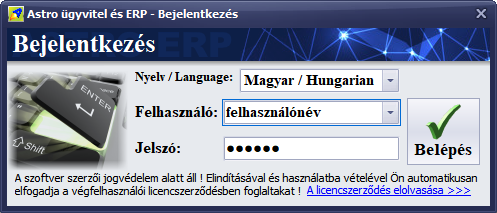
In the future, more users and employees can be specified in the Master Data Main Menu group , in the HR, in the Employees module , in the same Permissions tab, to restrict or enable certain functions of the system for the user.
You can also select the language in the login window, which can be Hungarian (default), English, German, French, Japanese (only the Hungarian and English versions are available in the basic version).
4. Main Screen
After you have filled in the correct fields for the sign-in and clicked on the login button, the main screen will appear. If you have already worked on the system and left the modules open, the software will ask you if you want to download the previous session. If you choose to back up the session, you can continue to work where you left off.
The main screen consists of the following items:
4.1. main Menu
On the left, the main menu bar is displayed, and when you move the mouse pointer (or tap it on the touch screen) , the main menu pops up.
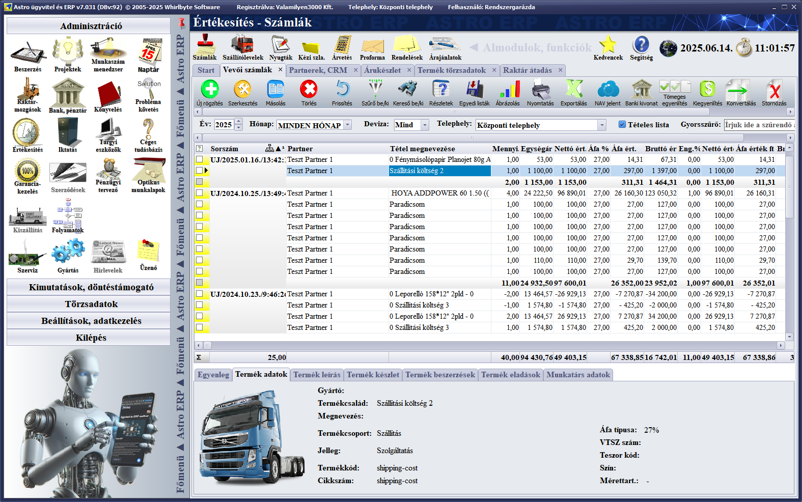
The main menus in the main menu are:
· Administration - in this menu item you can perform administrative tasks
· Testimonials, decision support - here we can ask you more important information about the operation of the company
· Master Data - Record and modify system basic data in the database
· Settings, data management - system-related settings, export / import functions, data backup, etc.
· Exit - log in with another user or exit the system
The main menu groups click when you click on them. Within the main menu groups, the icons of the modules are displayed, logically positioned according to their functions. Clicking on these icons (or tapping on the touchscreen) opens the modules.
Module Icons If you right-click on the left mouse button (or hold your finger on the touch screen for a long time) , you will see a shortcut menu that you can use to add the icon to your favorites.
4.2. Main screen window header
The title of the main screen window, or the bar at the top of the screen, shows the name of the software, the version number, then the version number of the database in brackets, the software manufacturer, your company name (Registered) , the current location, and the name of the logged in user / employee.
Below, the left side of the header bar shows which module is currently active (or active tab, Module - Almodul) .
4.3. Sub-module bar
Under the window header, to the left, the sub-module icons of the module to which we have entered are displayed. (Some modules are subdivided into additional sub-modules, such as sub-modules for sales accounts, customer shipping letters, customer receipts, etc.)
On the right, the Favorites
icon is located (clicking this will open the [Ctrl + K] combination of the favorites window, keyboard) . the Help icon (which opens a small menu where you can access the manual, version history, license agreement, software contact, and report a problem to customer service) , followed by the current date and time display.
4.4. Headband (open, active modules)
Below the sub-module bar is the tab bar that shows the active modules that are open.
Some modules open in a separate window (modules that have a special interface) , but most modules have a new tab on the tab bar, as we used in the Internet browser. You can switch between these open modules with tabs. Module tabs can also be moved from one web browser to another, as usual, or locked with the X button on them. This browser schema provides a simple, orderly, and transparent interface.
For most modules (which also appear on the tab bar) , you can see a list of items in that module (in the product body, the products, the invoice list) .
If the tabs do not fit on the screen, you will see two buttons on the right, with a left and one right arrow. This allows you to scroll the ears in both directions.
To navigate between active modules, if you are on the main screen and press the [Esc] key, the module list will appear in the middle, which will also allow you to switch between open modules.
Each module change (if you move from one open module to another) will reload the data of the next module (it may take up to a few seconds) to ensure that you always see the data stored on other workstations.
The Start tab (the first tab from the left) is the only one that is always visible and cannot be closed. After starting the software, you will start with the Start page (unless you have loaded the previous session) on which system information will be displayed and on which you can build a company dashboard from the flash reports (read more on the Modules topic) .
4.5. Module toolbar
Below the tab bar is the toolbar of the module that we entered. Here are the following buttons:
· Use the New Record [F2] key to record a new item (for example, a new product in the product body, a new invoice for the invoices) . The edit window for that module will then appear.
· The Edit [F3] to edit the selected item (this editor window for the module is also displayed) .
· Use[ Copy F5] to copy an item, so you can create a new one based on an existing one.
· The Delete [F8] key can be used to delete an item if the system allows it (if other modules are not yet in use or a document is not closed) .
· Use the Print button to print a list on the screen.
· Use the Export button to export the list on screen to CSV or Excel Xls / Xlsx.
· The Representation graphical buttons (various graphs and charts) can display the data in the list (this will be more details below) .
· Use the Search button to display a simple search window (similar to other software) that you can use to find the column in which the selection is made.
· Use the Filter button to turn the filter table on and off, which allows you to easily filter the list according to almost any individual needs (see section 4.7 for more information on filter mode) .
· Use the Custom Lists button to save the aforementioned filtered table view or load a previously saved table.
· The Details button allows you to activate the item detail view. This is an extra bar within the spreadsheet where you can find all the data for that item. The detail bar is always displayed under the currently selected item. This feature is not available in all modules.
· The Upgrade button simply reload the list.
· With Group Operations , if you select multiple items by ticking the check boxes in front of the rows, you can modify certain items at once. Not all modules work.
· The Balance button will only appear for vouchers, including those whose financial settlement is enabled in the settings. For example, we can specify the amount paid for transfer accounts.
· The Bank Extract button is only displayed on documents. Opens a sub-module that allows you to scan bank extract files and automatically delete them from the system.
· The NAV report button (shown only in the Customer Accounts module) will send the not yet reported but reported * invoices to the NAV server with the software (the accounts will be reported automatically after they have been closed, but if for some reason you would not succeed, press this button the report can be forced to start again). This NAV function also runs automatically when you exit the software to make sure you don't miss an unpaid account that day.
* At present, all invoices issued by domestic companies or private contractors, whose VAT content reaches or exceeds HUF 100,000, must be reported.
· With the Close button you can lock the module in which you have just entered.
4.6. Featured Filters
Below the module toolbar are the highlighted filters. These are always visible and module dependent, which highlighted filters appear here.
For example, in the case of vouchers, the year, month, currency, location.
Important information about featured filters:
· The filter settings for the highlighted filters are overridden bythe filter mode ( Filter button on the module toolbar ) . For example, in the case of vouchers, the year and month in the highlighted filter are in vain, if we set any time interval in the filter mode enabled, the latter will be considered.
· On the right side of the highlighted filters bar, there is a quick filter for each module , which is for quick search only, so it does not replace the normal filter mode.
· In the case of vouchers, you can access the Batch view on the highlighted filter bar, which means that unlike the basic list, another list appears showing the items in the documents and filtering or grouping operations.
4.7. Filter Table
If the Filter button left on the module toolbar turns on filtering, then a filter table appears between the highlighted filters and the table showing the items in the module.
By using this filtering mode (and in combination with grouping and group summaries), you can create almost any unique statement from our data, which you can also save by clicking the Custom Lists button.
This is a three-line table in which each column has its equivalent in the list. You can freely write or select data in your columns.
Filter rows:
1. If you write some data to the filter column in the first line of the filter, the exact text or data you enter will be displayed.
2. If you write something in the second line of the filter, the larger the data will be displayed.
3. If you type in the third line of the filter, it will filter the smaller data.
Filtering is automatic: as we write or select a data from the drop-down list, the system will constantly change the list.
You can also enter details about the data you want to filter, and then filter some of the matches.
You can use the% character for the data you type in the filters, for example, to filter for word match and end word.
You can write filter criteria (even to each one) in multiple columns at once .
In case of date filtering, a small calendar can be dropped, but the data to be filtered can also be entered manually. You can confirm the date filter by pressing the [Enter] key on the keyboard and pressing [Backspace] or [Del].
If you disable the filter table with the Filter button on the toolbar, the filtering will also be canceled and the list will return to normal mode.
You can delete the filter conditions at the same time without turning off the filter by clicking on the small icon in the top left corner of the filter table or by using the [Ctrl + R] key combination.
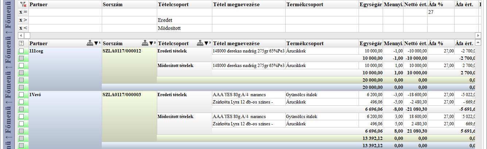
4.8. Item lists
Most of the main screen is the list of items (or data) of the current module (in which we are currently working) .
This is a standard table with arbitrary grouping and sub-aggregation options.
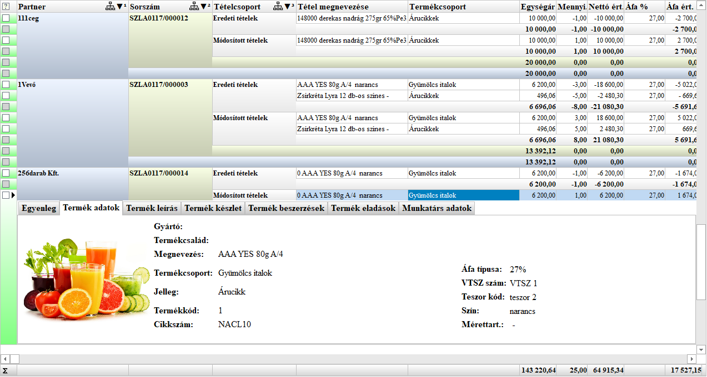
Below we discuss the use and configuration options of the item lists:
4.8.1. Column Settings
The column headers can be moved freely with the mouse by grabbing another position and adjusting their width.
You can set up one or more columns to increase or decrease in order. You can change the order and its direction by clicking on the column header (left mouse button) , or the same can be set in the right-click menu of the column header , also in the direction of sorting .
Because we can sort the list data by multiple columns at once, all sorted columns have priority. First, sorted by Priority 1, within the Priority 2 column and so on. Sort priorities in the column header menu above, in the column priority section. Column priority also plays a role in grouping (below) .
Arranging multiple columns at the same time may slow down the query of the lists (this is most often the case for calculated columns that cannot be indexed as the native columns) . If you detect a slowdown, you can only sort the data in a row by one column, turn off the order with the rest by using the no sort option in the column header menu.
If you click the right mouse button (long touch on the touchscreen) with a column header instead of any other part of the table where there are data, another pop-up menu will appear that allows you to turn the columns' visibility on and off, and save your column settings as default .
Below the list is the end summary bar, where the totals are displayed by columns.
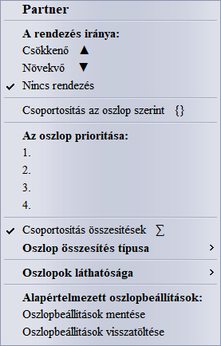
If you right-click on this summary bar, you will see a pop-up menu where you can set the type of aggregation for that column (this also applies to grouping sub-totals) .
4.8.2. Grouping and sub-aggregations
A faster, more transparent, server-side, multi-level grouping and sub-aggregation algorithm has been introduced in the software.
For example, our documents can be grouped by customer and serial number. These can be further grouped in item view, for example, by item group, product group, or VAT key.
Columns can be grouped by right-clicking in the header of the column you want to group , and then selecting Grouping by Column in the pop-up menu that appears . Then the data will be grouped by this column (also).
Similarly, you can disable the grouping on that column.
The grouping columns are always automatically placed at the top of the table.
You can enable or disable subgroup summaries in the same context menu by selecting Grouping aggregates . Enabling sub-totals for each grouping column applies simultaneously.
You can select the type of column totals (none, aggregate, average, etc.) as you would otherwise, by clicking the right mouse button on the shortcut menu that appears below the table.
The grouping order of the grouped columns can also be set in the above-mentioned menu, in the " Column Priority " section, or by grabbing the column at the header and dragging it to the correct position.
You can also specify the direction of sorting by grouping from the context menu in the " Sort Direction " section or by clicking on the column header with the left mouse button.
Each group level is represented by a different color, so you can easily distinguish between the different levels in the list.
Saving the lists, including saving the default list view, also saves the grouping settings.
4.8.3. Select status, multiple rows
A narrow column is shown on the left side of each table. This is the so-called indicator column.
In the indicator column, there is a square at the beginning of each line, and if you click it, a check mark appears , marking the line. You can remove the selection by clicking again. Pressing [Space] also switches the line selection.
By clicking on the icon in the upper left corner of the table , you can select the entire list, or you can also undo the selections from each line.
If you select multiple rows, you can perform group actions at the same time. Group actions can be performed on the toolbar by pressing the Group Actions button, if available in that module.
Each row in the indicator column may have different colors, depending on the status of that row. The statuses and colors vary by module. 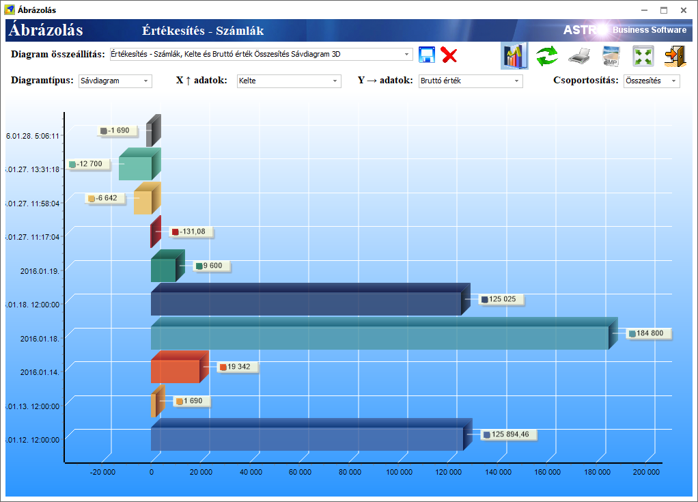
For example, in the case of vouchers, yellowed drafts are highlighted , unbalanced red , green are matched and completed , the turquoise is invalidated and corrected .
4.9. Graphic representation of item list data
Use the Display button on the module toolbar to graphically display graphs (graphs and charts) in the list.
It is advisable to first filter the list according to our needs before depicting the data.
From the drop-down list named chart diagram , you can select the settings you have previously saved.
You can save the current settings with the small disk icon.
Press the red X button to delete the saved settings.
To the right there are six more buttons in the function line:
· Turn on and off isometric 3D view
· Redraw and reset the figure
· Save as Image (in BMP format)
· Frameless full screen mode
· Exit display
The following line item can be used to render display settings:
· Chart type , which can be graph, bar graph, bar graph, area charts, scatter plots, pie chart
· X and Y data : in these settings you can specify which data to display on the two axes
· Grouping : specify how the data should be aggregated (recommended for many data)
5. Modules
There are almost 100 modules and sub-modules in the software (the number of which is constantly increasing, so a module may be added later in the manual) . These include administrative functions, various vouchers, decision support, master data, and auxiliary functions, system maintenance.
This section reviews the modules in a row, by category. (Some custom modules may be missing from this version of this manual, such as the modules for the forwarder and optics system)
Within the categories, the modules will be listed in order of their construction.
There are modules that are very similar and differ only in a few of their parameters, only the differences will be mentioned in the manual.
Let's start with a special module:
5.1. Start tab
The Start tab module is always active and cannot be closed. You can access it on the tab bar by clicking on the first Start tab.
On the Start tab, you'll find the following features:
5.1.1. system Messages
The System tab is displayed in the upper left corner of the Start tab. The System Messages panel displays inventory shortages, alerts that are not closed, and other important information.
If you click on a message in the System Messages panel, the module with the alert is automatically opened after a question.
Here is highlighted in purple if there are no accounts yet.
5.1.2. Quick reports, company dashboard
On the Start tab, use the button on the sub-module bar to create quick report windows. These flash report windows can be moved and resized in the same way as any other standard window. By defining multiple flash report windows, we can build an informative dashboard that continuously monitors the company's operations.
In the quick report window header , you can specify in the setup menu that appears by clicking on the icon (in the lower left corner the bottom left corner) the format in which you want to display the data, the type of report, the period, the type of values, and the location. The Quick Report Setup menu also appears when you right-click on that window.
Use the button to confirm the quick report settings.
Speed report data is automatically updated every 15 minutes, including system messages. With this ideal time interval, the server is less burdened, but still enough to track the status of the company in almost real time.
You can also manually start the update of the flash report data by clicking the button. You can sort the report windows in a row by pressing.
If the flash reports do not fit on the "Start" tab, the internal size of the page increases and scroll bars can access windows that are hanging or not visible from the page.
Quick reports are saved when you exit the program and recharge if you choose to load the previous session at login. At this point, signing up will take a little extra time to update your flash report data.
Quick Reporting can only be used by users who have access to "Statements, Decision Support" between permissions.
Firmware dashboard built from quick report windows on the "Start" tab: 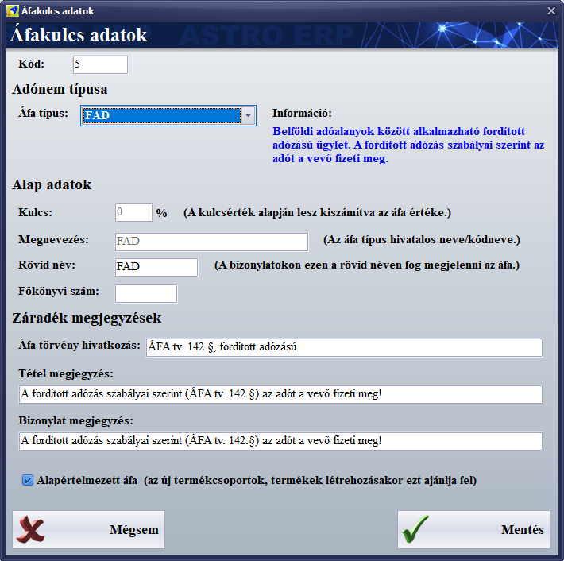
5.2. Master data
In order for the system to work, there must be some basic data such as the VAT strain, partner strain, employees, product groups, product strain, etc. Some types of master data already contain data that needs to be modified or expanded if necessary, but most master data is still empty, and we need to upload them.
5.2.1. VAT tribe
This module is used to manage the existing VAT types. The current VAT types are already included in the installation.
The VAT rates shown in the VAT invoice can be selected in the product groups and in the product body (for each product).
If a new VAT type is introduced, it must be recorded as a new entry.
If a VAT type ceases to exist, it will not be deleted because it may still be referred to by previous vouchers (such as invoices, shipping notes).
Whenever you change the VAT rate, follow the advice above, do not override the value of the previous VAT key, but instead create a new entry. The exchange of VAT rates for products (goods or services) can be solved in other ways.
You can edit the following data:
· Name: enter the official name of the VAT in this field. This VAT text will also appear on your invoice. Required data.
· Key: enter the numerical value of VAT in this field, as this will account for the system. If you are editing a commonly used VAT type (currently 27% VAT), you can tick the "Default" option. Required data.
· Type of tax: there are special types of VAT, these have to be marked separately for the software under "Tax type". For these special types of VAT, it is mandatory to include on the documents (eg invoice) clause text per item (Item Comment) or at the end of the document (Document Note).
Here are the options:
o Reverse taxation
o Tax-free
o Excluded from
the VAT Act
o
Taxed according to the difference including the passed tax
o
Taxes that do not include a pass-through tax
o
Default:
we can set the VAT to be the default, ie when we add a new product group or a new product in the product body, it automatically offers this VAT. This setting will be overwritten by the VAT set for the selected product group for the product. By default, the most commonly used VAT is set. If a VAT is set as the default, this setting will be deleted from the previous default VAT.
· Item Note: If you are required to include the clause text in the invoices for each item in the VAT, you can enter its exact text in this field.
· Document note: if you are required to include a clause text in the note note for the relevant VAT, you can enter its exact text in this field.
If you have entered all the data accurately, you can use the "Save" button to record the new VAT to the VAT base.
5.2.2. Gender Gender (or Titles)
We will always have to choose a title for our bank and cashier cash flows. This master data module is used to store these types of item.
As suggested for the VAT strain, deletion is not recommended here either.
We must provide the following information:
· Name: the exact, official text of the money transaction.
· Direction: We need to determine whether this particular cash flow is a revenue or an expense.
There are special types of cash flow, such as customer or supplier payment . In this case, we need to give the appropriate option that the software knows, for example, that for a given cash flow we have settled the account of a buyer or supplier.
If all data is entered correctly, you can use the "Save" button to record the new title in the master data.
5.2.3. cost centers
In order to account for our costs, we need cost centers that can be created in this module.
A cost center consists of two data:
· Code: code of the cost center. This code can be used to refer to that cost center.
· Name : full name of the cost center. In addition to the code, this name can also be used to refer to the cost center.
The cost centers defined here can be selected when editing the items in the documents (for example, items on an incoming invoice).
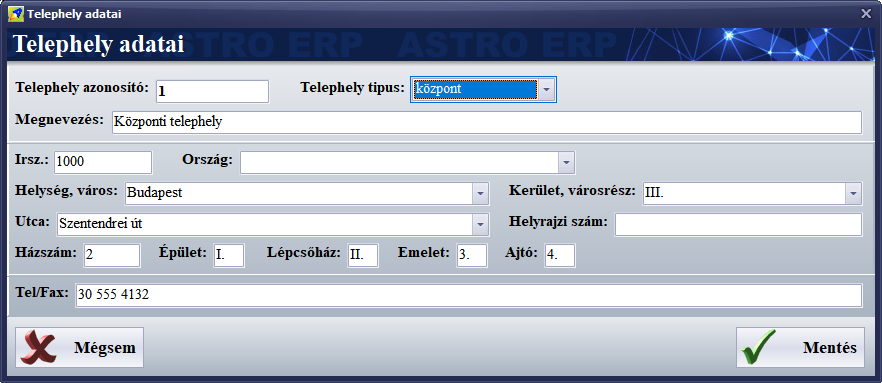
5.2.4. locations
A company may have more than one location, so any number of sites can be created in the software.
When you add a new location, you can fill in the following information:
· Site ID: freely definable number data. When recording a new site, the module always offers the next number. Required data.
· Site Type: Central or Branch / Client. The site type can play a role in special cases, for example, if you run a webshop and send the products to the customers from the central site, the software can decide on the basis of this setting which of these is the central site.
· Name: Name of the site. This name can be used to refer to other sites in the site. Required data.
· Address data: the title is divided into basic data. Address information is optional but recommended.
· Tel / Fax: the telephone contact details of the site can be listed here.
If necessary, this module may be expanded upon request with other information such as site manager or any other data.
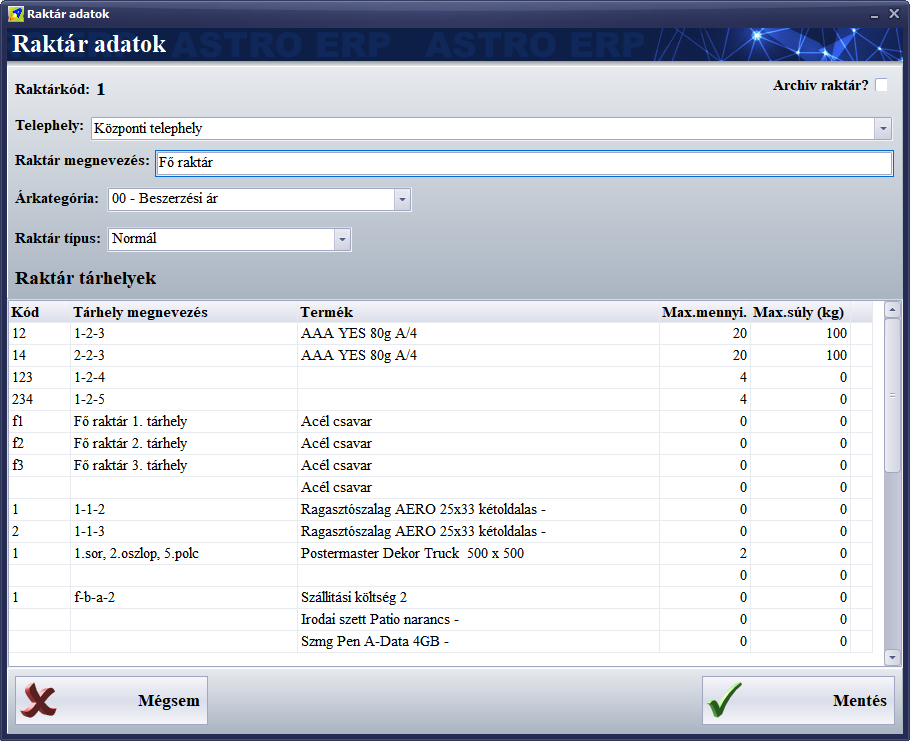
5.2.5. warehouses
Our products are stored in warehouses within the premises. You can have more than one warehouse on one site. In this module, you can create these stores.
When creating a new warehouse, you need to provide the following information:
· Site: the location where the warehouse is located. Required data.
· Warehouse name: the name of the warehouse, it will be selectable at any location where you want to refer to the warehouse. Required data.
· Price category: The price of the selected price category will be offered by the software at the time of sale (if selected in the price range of the selected partner in the voucher).
· Warehouse type: important, mandatory data type is the type of warehouse that is basic information for the software. These types may include:
o Normal: general warehouse (in case of new warehouse it is recommended by software).
o Transit: a transit logistic warehouse where the products are only temporarily on paper (for example, as an intermediate logical storage warehouse for transfer from one truck to another).
o Commercial: In this type of warehouse, we can store commissioned products.
o Disposal: In this type of warehouse, we store the scraps (only scraps of this type can be selected as a target warehouse for scrapping).
o Waste: a storage facility for waste generated during production.
o Background: is a special store where we store products that have been set aside, lying or for other purposes.
o Service: for storage of repaired, repairable, repaired and repaired goods that are waiting for delivery.
· Archive Warehouse: Check this if the warehouse is no longer in use (instead of deleting the warehouse).
· Warehouse Storage: All products in a warehouse have their own place. These so-called repositories, which can be defined in the product data sheet on the product data sheet for each product. Here, the storage modules are only listed in the warehouse module.
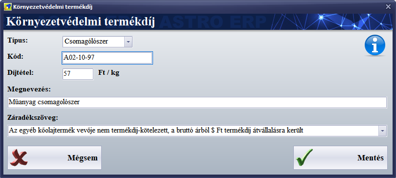
5.2.6. Product fees (environmental product charges)
In the cases specified in the law and government decree on environmental product charge , the invoices shall contain itemized product fees and the text of the clause required by the decree.
These product fees can be managed in this module. The product fees created here can be assigned to each product in the product body (for products, it will also be necessary to indicate the quantity of a basic unit of the product in kilograms of the given product charge).
When creating individual product charges, all data is required :
· Type: Product Type is an important piece of information for the software that can be:
o Packaging agent
o Waste
o Product fee
· Code: The code for the product fee is a code line consisting of letters and numbers with hyphens that must be specified.
· Fee: the fee for packaging, waste or other product charge in kilograms, expressed in HUF, must also be specified.
· Name: indicate the exact name of the packaging, waste or other product charge.
· Closing text: this field must be precisely preceded by the clause defined by the Regulation.
More information about each field will appear if you hold the mouse cursor over them. A local help menu is displayed on the module if you hold the mouse pointer over the blue information icon in the upper right corner.
It is the responsibility of the user to fill in the product data correctly.
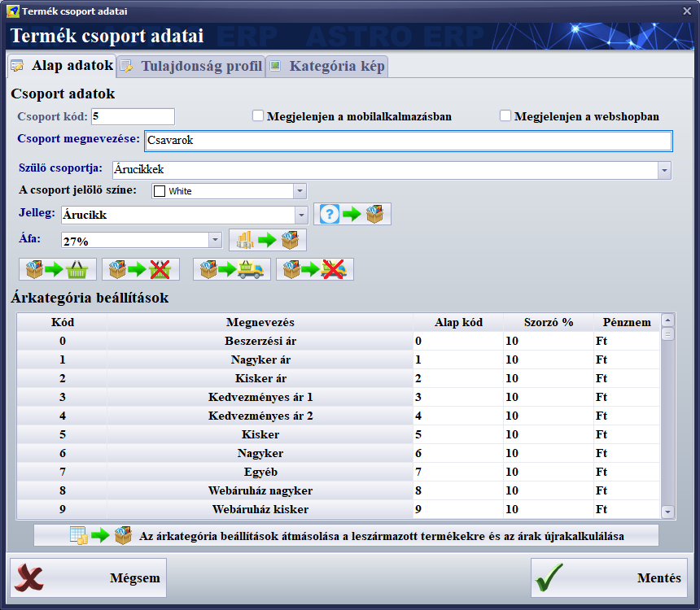
5.2.7. product Groups
In the product body, we will have to provide a product group for each product. In this module, we can create and edit these product groups.
The following information can be provided:
· Group code: this is an arbitrary number. The module will automatically offer you the following. Required data.
· Name of the group : name of the product group. This name will appear everywhere, so we can refer to the product group. Required data.
· Parent group: The most important feature of product groups is that they are located in a structure tree. Therefore, each group has a parent group that must be selected. If a group does not have a parent group, that is, a parent root group, then this should be chosen instead of the parent: "Root group". Required data.
· Root Group Marker Color: Optional color for root groups can also be specified, which will be relevant to the statements in the Revenue Chart.
·
Character:
additionalimportant data to be selected is the nature of the group, which determines which products are found in the group.
Characteristics include:
o Commodity: general commodity.
o Service: if you have any service.
o Prepayment: If you want to give an advance payment, then there must be at least one prepayment entry in the product body, as the invoice must include an advance as a separate item.
o Packaging: any other product used to store products.
o Packaging: packaging material (this is not the same as the product fee data, here as a product).
o Waste: retained from production or other waste (not equal to the data that can be specified in the product fee module, it is listed here as a product).
o Land vehicle
o Air transport
o Water transport device
o Tobacco product
o Mineral oil
o Shipping costs: If you want to charge for shipping costs, you will need to include a shipping cost item in the product body, as this item must be shown on the invoices as a separate item.
· VAT: this data is the same as the character, the products in the edited group will be subject to the specified VAT (but can be set separately for the products). The VAT data can be selected from the items recorded in the VAT base. Required data.
·
Price category settings: Price category settings are also inherited for products in the group (for products, you can also change the base price category code and profit margin individually).
The default settings for the price categories can be changed in the software settings. Here you can only change the base price category code of the price categories and the profit margin (the name and currency of the categories can only be edited in the settings).
It is important to mention that price categories can be programmed for automatic calculations. To do this, you must enter the code for the category in the "basic price category code" column of the price category you are automatically calculating (the first column shows the category codes) from which you would like the price of the current category to be calculated and the percentage that the base is in the profit margin field. must be added to the price of your category.
In which price category the "basic price category code" column has its own code, that category will not be automatically calculated.
If you have changed the settings for a group price category and want the products under the group to be inherited immediately, you need to press the button below the table.
· Show in the webshop: If the software is connected to a webshop, you can set whether the category is displayed in the webshop, orbrowsethe category image tab to display the category image, also in the group webshop.
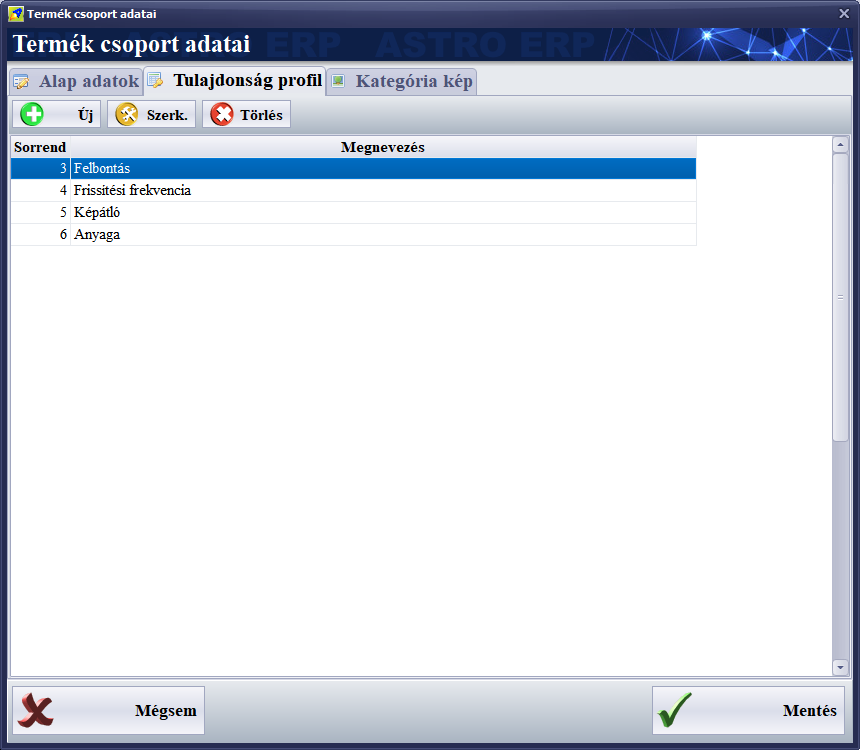
In addition to the basic data, the property profile tab allows you to create a list of unique properties for the products in the group (whose values can be filled in for each product).
Here you can use the value in the order column to create the order of displaying properties, and in the title column you can type the property name.
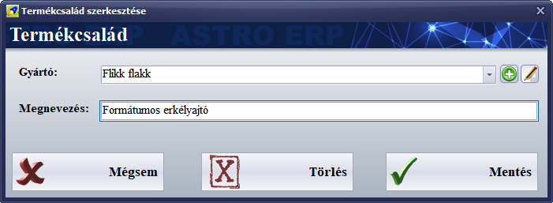
5.2.8. product Families
Each product has a manufacturer, and manufacturers usually classify their products into families. This module is used to store these product families at the master data level.
We only need to enter two data:
· Manufacturer: a manufacturer type manufacturer. If there is no manufacturer to choose from, you can use the first button to create a new producer in the partner body to the right of this field.
· Name: the name of the product family.
For products, we can also specify the manufacturer and the product line freely, without the need to record this data as master data. In this, the software gives free hand.
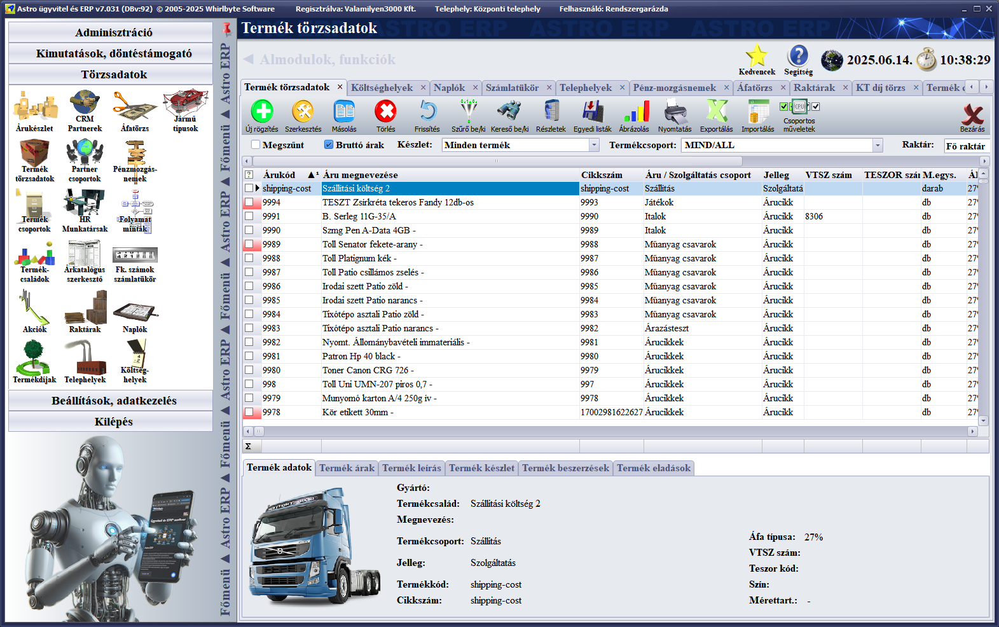
5.2.9. Product Master Data
In this module, we can list and edit products and services (services can be considered a kind of product).
The products are discussed in two parts in this chapter. One looks at the list of products and the other is the product datasheet on which we can edit the details of each product.
5.2.9.1. List of products
When we enter the product body module, we have the following settings above the list of products (marked in red on the picture):
· Discontinued: If you enable this option, products that have been set aside previously will also appear in the list.
· Inventory: lets you filter the list by following these criteria:
o All products: no stock filtering.
o Positive quantities only: only products that have a stock appear in the selected warehouse.
o Negative quantities only: only shows the products for which the inventory level has turned negative in the selected warehouse (this is possible if the sale is ahead of receipt).
o Decreased only below the minimum set: only products in the inventory that are in stock have fallen below the minimum specified for the selected warehouse.
· Product Group: If you only want to list products that belong to a particular product group (and its descended groups), you must select the appropriate group here.
· Warehouse: Here you can select the warehouse for which the previous filters work and the values of the special stock level indicator columns are calculated.
For more information about the special stock level indicator columns (marked in blue):
Ø The minimum set column in the warehouse above the list shows the minimum set limit set for the product.
Ø The stock column shows the current stock level in the selected warehouse.
Ø All bookings that are not yet completed (not yet invoiced) can be seen in the Reservations column.
Ø In the ordered column, we can see all the quantities recorded on the unsubscribed (non-received) supplier's order.
If you want to see more information about a product in the list, you can see the details bar by turning on the details mode .
There are several tabs on this bar: 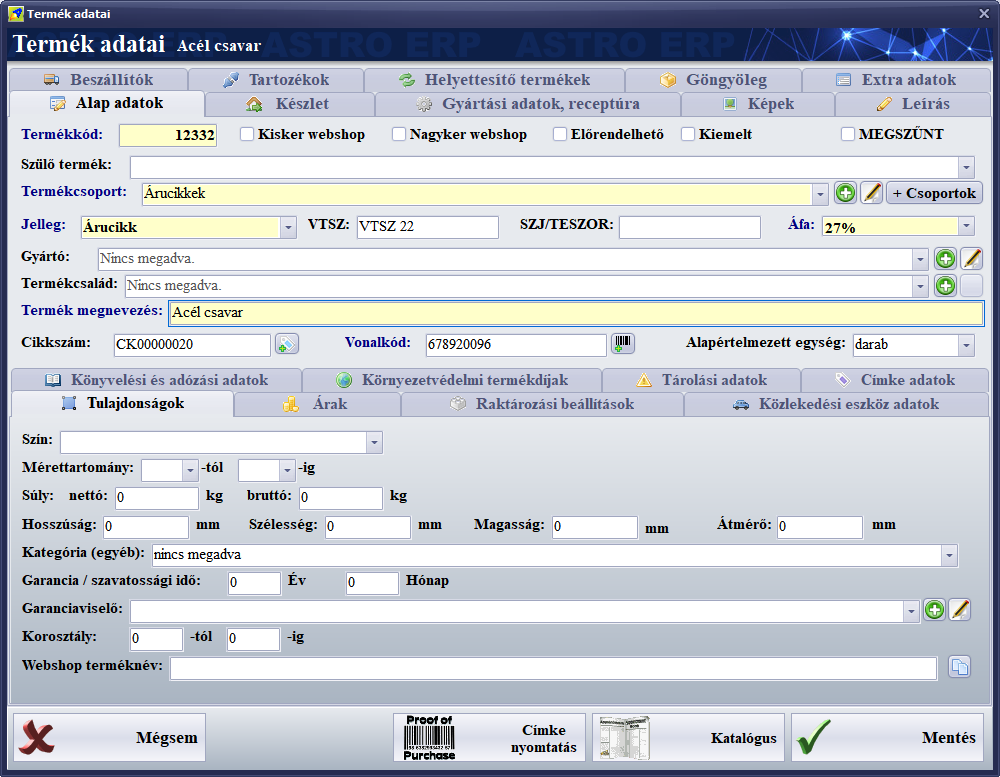
· Product Details: You can see the main image of the product and read other basic data.
· Product Description: A preview of the html format edited on the product data sheet is displayed.
· Product Kit: Here you can see in a table by stock what quantities the product has, which warehouse contains the minimum, optimum, maximum inventory level settings and which storage locations the product can find.
· Product purchases: You can see when and how much was taken from the product by date.
· Product Sales: By date you can see when and how much of the product was sold.
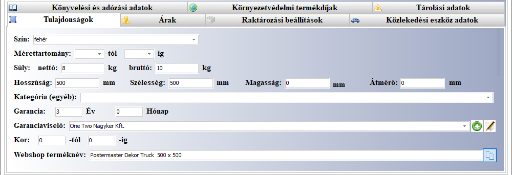
5.2.9.2. Product datasheet
If you create a new product or edit an existing one, the product data sheet will appear:
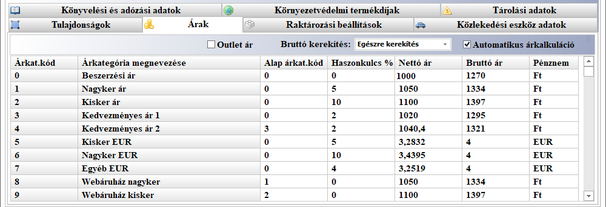
This is one of the most complex modules. Product data can be divided into several groups, available on separate tabs (tabs):
/
Basic Data Sheet
On this page, we need to start filling in the data even more, because there are required fields:
·
Product code:
Product code. In the case of a new product, the next serial number is automatically assigned, but can be rewritten. Its value can consist of letters and numbers. Required data.
·
Retail Webshop: If you run a webshop, you can set up the product to be added to the retail store.
·
Wholesale Webshop: If you run a webshop, you can set up the product to be uploaded to the shop's wholesale section.
·
Preorderable:
this option is used to indicate if the product is not yet available but pre-ordered. It is also important in a webshop.
·
Highlighted:
will show the product among the highlighted products of the webshop if this switch is activated.
·
Discontinued:
If the product is no longer available, it will not be marketed with this switch (instead of product deletion). Later, when the product is available again, we can turn it off again.
·
Parent Product: If there are more, almost identical products that differ only in a few parameters, you can select one as the product of the other parent. This is useful, for example, in a webshop for a more transparent presentation of products.
·
Product group: Product
groups have been mentioned before. Here you can select the appropriate product group for your product. After selecting the product group, the group's nature, VAT setting and price category settings will be copied to this product (these data can then be changed). Required data.
·
+ Groups:
If you run a webshop, you can use this feature to classify your product into several product groups.
· Character: additional mandatory information on the nature of the product. This product is inherited from the product group (but can be changed afterwards). Characteristics include:
o Commodity: general commodity.
o Service: if you have any service.
o Prepayment: If you want to give an advance payment, then there must be at least one prepayment entry in the product body, as the invoice must include an advance as a separate item.
o Packaging: any other product used to store products.
o Packaging: packaging material (this is not the same as the product fee data, here as a product).
o Waste: retained from production or other waste (not equal to the data that can be specified in the product fee module, it is listed here as a product).
o Land vehicle
o Air transport
o Water transport device
o Tobacco product
o Mineral oil
o Shipping costs: If you want to charge for shipping costs, you will need to include a shipping cost item in the product body, as this item must be shown on the invoices as a separate item.
·
VTSZ: the
heading to be given for the article, not required, except where it is necessary for a particular product.
·
SZJ / TESOR:
service list number is also optional, unless required for some reason.
·
VAT:
the VAT rate of the product. It is inherited from the product group after its selection (but can be changed later). Required data.
·
Manufacturer:
The manufacturer is a manufacturer type partner that must be affixed to the partner body. But it is not necessary to select from the partner body;
·
Product family:
the product family can be selected from the strain, but can also be given in free words.
·
Product name: one of the most important features of the product is its name. Be sure to fill out. Required data.
·
Item number:
Product article number (or SKU). The button next to it can generate a new one or be freely filled. If left blank, a new article number is generated for the product when you save the product. Item number generation is based on a mask that can be defined in the settings.
·
Barcode:
The product barcode has similar rules to the item number. You can type (or retrieve) the product's serial number or create a new one with the button next to it (the mask can be defined in the settings). It is definitely helpful if we handle product article numbers, because using barcode scanners can significantly speed up your receipt, inventory, inventory management, and sales.
· Default unit: The default unit of measure to calculate a unit quantity of product. The most common units can be selected from the list, but can also be filled in freely. If the product does not have a unit of measurement (for example, in the case of an advance or shipping cost), then we can do a dash character here. Required data.
The Basic Data tab includes additional tabs:
¤ Properties tab
On this page, you can record the most important features of the product (these are optional):
§ Color: the characteristic color of the product.
§ Size Range:
If a product has a range of characteristics, it can be specified here. There is no specific unit of measure because it can be used for many purposes.
§ Weight: The net and gross weight of the product in kilograms. You can also specify a broken value.
§ Length, width, height, diameter: the spatial dimensions of the product, in millimeters.
§ Category (other): If necessary, we can freely specify other category data for the product.
§ Warranty: If we manage the warranty period for the product, you can specify the length of the warranty period in years and months.
§ Guarantor:
if we manage a warranty for the product but the warranty holder is another company, we can choose the person from the partner body.
§ Age: If the product is characterized by what age it is recommended for, then the age range can be specified here.
§ Webshop product name: If you are running a webshop, you may want to display a different name from the official name of the product on the interface of the shop (for example, an abbreviated name to extract). When we change the name of the product, this data is automatically filled in if it is empty. Use the button next to it to copy the full name of the product.
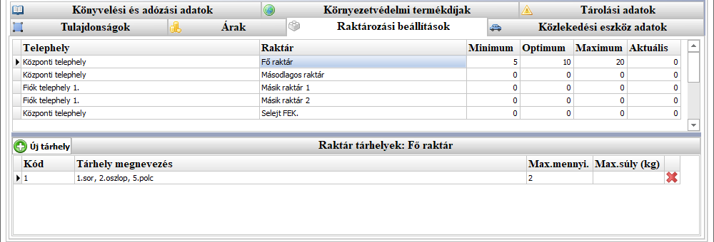
¤ Prices tab
Here you can specify the price categories and make other pricing options:
§ Outlet Price: This is a special setting, deducting 20 percent of the price.
§ Gross rounding: defines the rounding method when calculating gross prices from the net prices of the table.
§ Automatic price calculation: If off, prices will not be calculated automatically.
§ Price table:
Here you can specify the product prices by price category. In case of a new product, the basic settings of the price category are inherited from the settings (category name, currency) and from the selected product group (basic price category code, profit margin). The base price category code, profit margin, net and gross price can be changed.
If the automatic price calculation is turned on, if we change a price, all other prices will be recalculated (multiplied by the profit margin) where the code for that price category is given as the base price category code.
You can also change the product prices on the vouchers, but in the case of a new voucher item, you will always be offered a price that matches the selected price range of the selected partner or warehouse.
A similar price calculation table can also be found in the document batch editor.
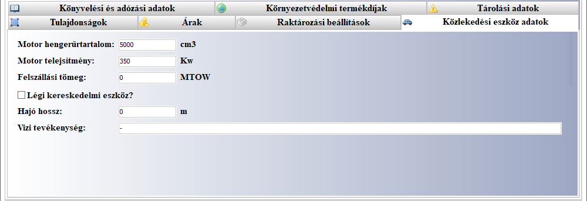
¤ Storage Settings tab
On this page, we can configure the minimum inventory, optimum, and maximum inventory levels for the different warehouses. The "Current" column also shows the current product set.
You can add storage space to your product under the Warehouse table. The product will be found in these repositories. The repositories will also be listed in the Inventory Invoice and Warehouse Release Documents entry note.
Add Warehouse Storage:
1. First, you need to select the warehouse to which you want to add storage space in the top table .
2. Then, you can create a new line with the New Storage button in the upper left corner of the storage table .
3. In the new line , you can enter any code in the code column that you can use to link to the storage space.
In the storage name column, you can write your storage location, for example: 1st row, 2nd column, 5th shelf
In the maximum quantity column, you can write the quantity that fits the product in that storage space.
The maximum load column is the storage capacity of the storage space.
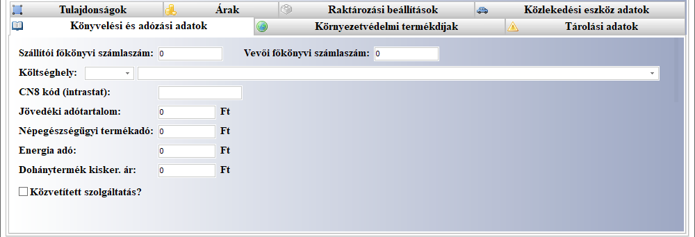
¤ Transport Device Settings tab
If the product is a means of transport, it may be necessary to provide the corresponding data. In the case of a means of transport, these data are the data to be included in the invoices.
§ Engine capacity: land, water, aircraft.
§ Engine power: can also be used for land, water, aircraft.
§ Take-off weight: data to be provided for aircraft.
§ Air Commercial Instrument: If the aircraft is engaged in commercial transport activities, it should be marked.
§ Length of vessel:
data to be provided for water transport means.
§ Water activity: in the case of water transport means its activity, in writing.
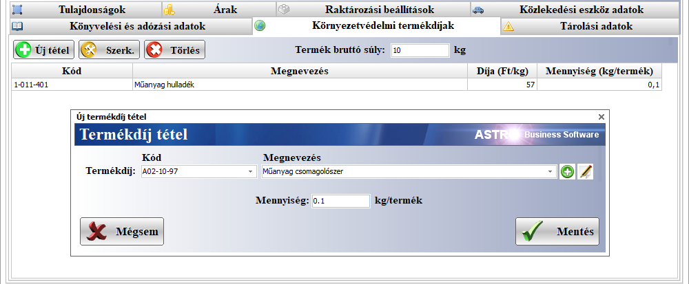
¤ Accounting and Tax Information Sheet
Use this tab to enter the product's accounting information.
§ Supplier Ledger Account Number: The ledger number for which the product can be posted from an Inbound (Supplier) Account. Useful information for bookkeeping software (bookkeeping for data submission, or for the built-in built-in automatic accountancy module).
§ Customer ledger account number: The ledger number for which the product can be posted from the outgoing (customer) account. Also useful for accounting program.
§ Cost center: You can choose from the cost centers recorded in the previously discussed cost center module. Information required for cost accounting, accounting.
§ Excise tax content: if the product is subject to excise duty, the amount of tax must be given here, in HUF.
§ Public health product tax: if the product is subject to a public health product tax, its amount must be entered here in HUF.
§ Energy tax:
if the product is subject to an energy tax, its amount must be given here in HUF.
§ Tobacco product retail price: In the case of a tobacco product, the retail price set here must be given in HUF.
§ Mediated service: if the product is an intermediary service, then it must be marked. The data is also shown on the invoices.
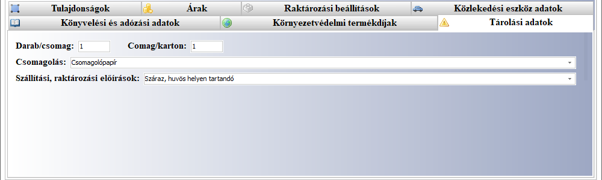
¤ Environmental Product Charges tab
If the product includes an environmental product charge, we can add the product fees fixed in the product fee module, assign it to the product, or more.
How to assign a new product charge:
1. The New Item button displays the product-product fee editor panel.
2. Select
the product fee you want to assign to the product based on the code or name . If there is no product fee yet, you can use the button to the right of the title field to create a new product fee in the product fee strain. Then click the button to change the product fee in the product fee strain. Caution!
If we change a product fee in the product fee stack, it will also affect other products to which we have assigned the same product fee!
3. Enter how much of the product charge is included in the product unit , in kilograms.
4. Use the Save
button to save the product fee to the list.
The new item
non-sphericity right, the Edit
edit button in the Delete
key to delete the product in the product charge assignment.
The product fee will also appear on the invoice for products that have been assigned a product charge.
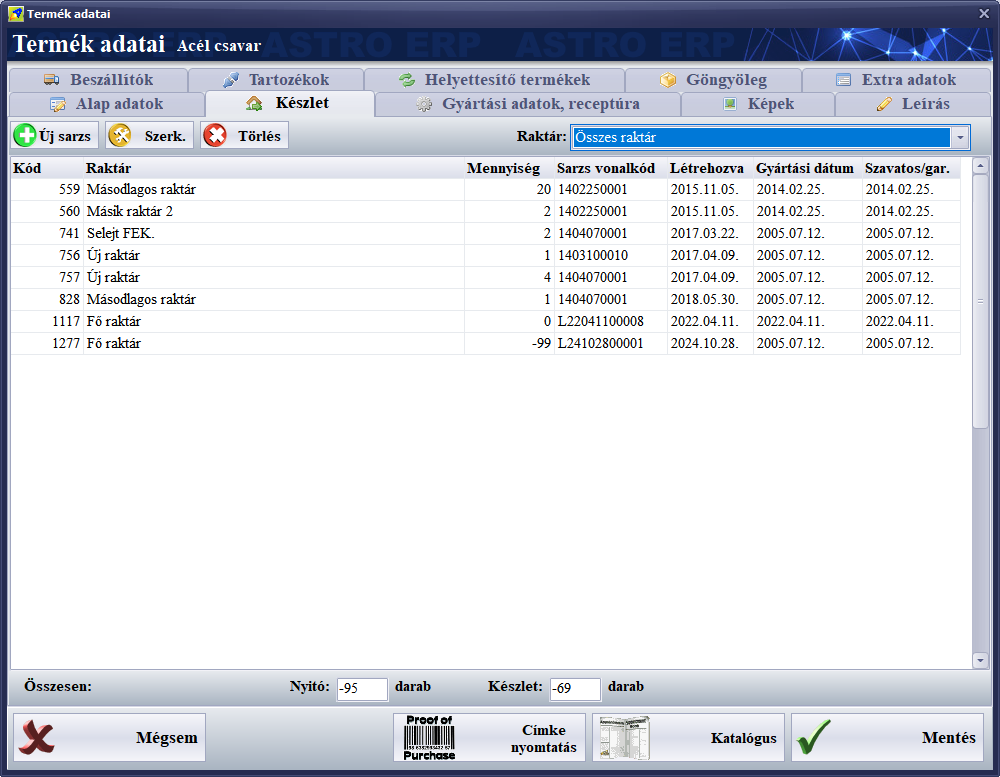
¤ Storage Data Sheet
You can enter information about the storage method on this tab.
§ Piece / package: you
can specify how many pieces of the product are in the package.
§ Package / Cardboard: You
can specify how much of a product is contained in a carton. The package / package and package / carton settings may be relevant for individual requirements (custom-made features), where the packaged products and materials in the package must be separated for separate sales.
§ Packaging: type and specification of packaging. Free text data. The previously entered data can be selected the next time.
§ Shipping and storage regulations: Shipping and storage regulations can be listed here. Free text data. The previously entered data can be selected the next time.
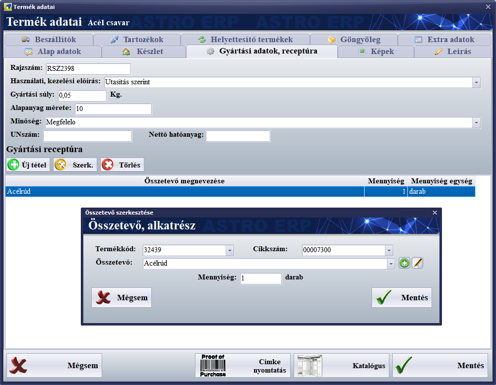
/
Set sheet
Elements of the product kit (also known as batch, charge, or batch) are listed on this page.
Use the New Batch button on the toolbar of the tab to create a new set of items for the product (the stock items, also called batches, are discussed in the kit module). Use the Edit button to change the item of the selected product, and to delete it using the Delete
button.
The warehouse
filter can be used to select which warehouse items we want to see for the product.
The total stock of the selected warehouse is shown below the table.
The set is primarily managed by vouchers, here we make corrections and corrections.
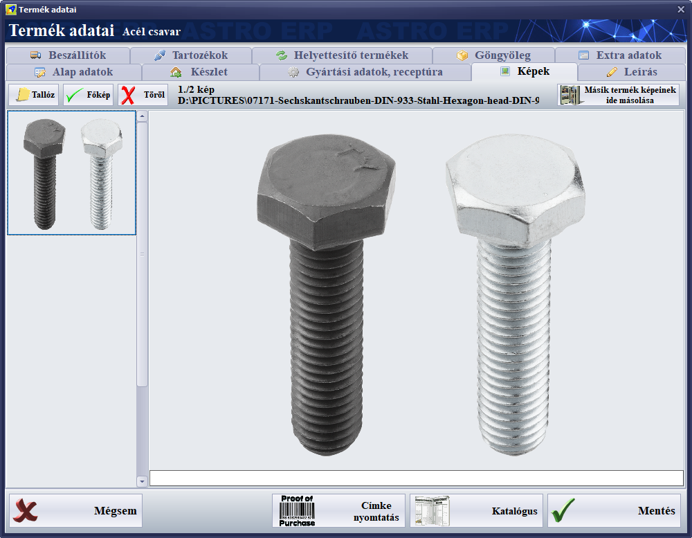
/ Production Data, Recipe Sheet
If the product is manufactured (or assembled or disassembled) by our own company, the manufacturing data and the recipe (raw materials, raw materials for the production of the product or the parts necessary for its assembly) can be recorded on this sheet.
Production data for manufacturing technology data:
§
Drawing number:
the number of the technical drawing to be used for the manufacture of the product.
§
Use and handling instructions: Information about the use of the product or special treatment (eg heat treatment). Free text data that can be selected next for other products.
§
Production weight: the weight of the product at the time of manufacture, in kilograms.
§
Size of the material: the typical dimensions of the raw material needed for the production of the product.
§
Quality:
the quality requirements of the product or its raw material.
§
UN number : The UN number (usually 4 digits) denotes the dangerous substances.
§
Net active substance: content of the net active substance of chemicals, pharmaceuticals or pyrotechnic articles, together with the indication of quantity unit.
In the manufacturing recipe, the ingredients or ingredients of the product to be manufactured and the quantities needed to manufacture a unit product can be partially fixed.
The raw materials are also products that must also be in the product body.
To add a new component, follow these steps:
1. Afterpressingthe New Item button, the Component Editor panel appears.
2. Select the component by its name. The ingredients are also listed in the product body. If you do not find the component you are looking for (if it does not exist in the product body), you can use the small button on the right side of the data field to create a new product.
3. Specify the quantity of component required toproduce a unit product(this is the quantity in the default unit quantity of the ingredient).
4. Save the component that appears in the list.
Use the Edit button next to the New Item button to edit, and the Delete button to delete the component from the list.
Manufacturing (assembly and dismantling) can be done in the manufacturing module.
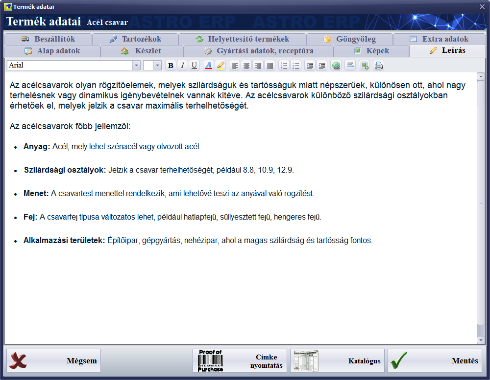
/ Pictures tab
You can attach any number and size of the product here. Images can be in jpg, jpeg, bmp, png, gif. There is no size limit, but we should attach as small images as possible, because larger images slow down the operation of the software (when displaying images). Only images smaller than 2 MB will be saved in the database, larger ones will only be attached to their original location.
You can attach a new image using the "Browse" button. After selecting the image to be attached, it will appear immediately in the list on the left and in the large preview image on the right.
To delete an image from the list , select the image you want to delete from the list on the left and press the "Delete" button.
The pictures should be between at least one characteristic of the main image , you can select it to select the candidate list to the left image and press the "Next Image" button. Then the main image will be the first in the list. The main image will appear in the list of products when you turn on the details mode.
You can write a subtitle under the images (in the text box below the large view on the right). This caption is automatically saved next to the image.
It is possible to copy the images of another product to the currently edited product by clicking "Copy images of another product" in the upper right corner.
If our company operates a webshop, then it is possible to upload these images to the webshop.
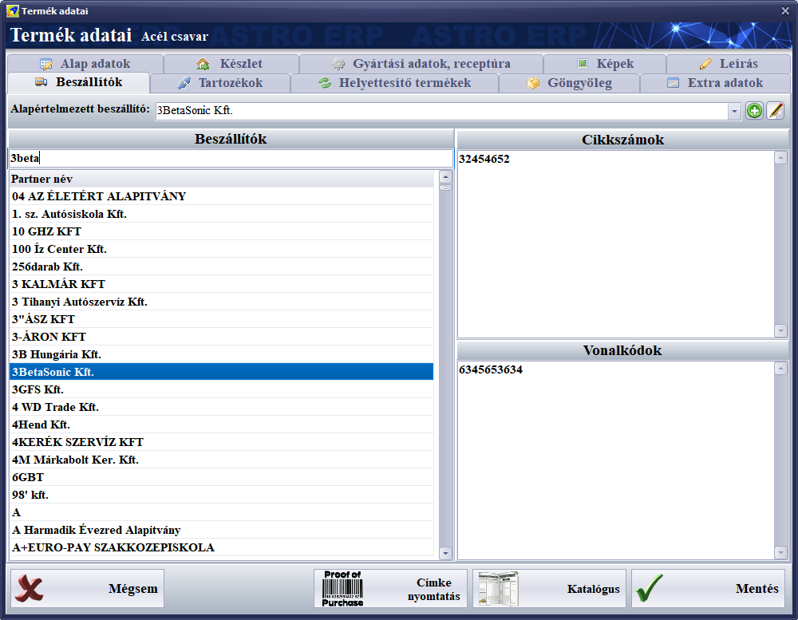
/ Description tab
If you want to record text information about the product, you can use this feature on this page.
The description is in HTML format (like web pages) and is saved in the database.
As with standard word processors, you can edit the text so we don't discuss it separately.
You can also insert links and images into the text (shown on the small toolbar, right-click with buttons 4 and 2), but then make sure that these links and images are on the web.
The description is automatically saved when you save the product.
The description can be used, for example, for webshops, for displaying text below or next to products, so that we can pass on more information to customers.
If this description feature does not work or is unavailable, you need to verify that you have Internet Explorer or Edge installed on your system, as this feature uses the snap-in engine of these browsers to display and edit the HTML document.
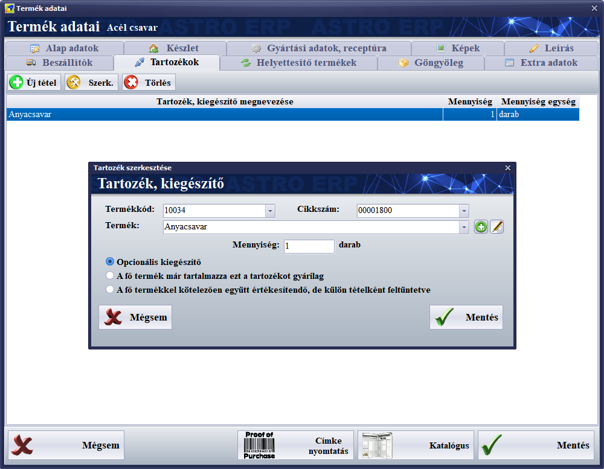
/ Suppliers tab
On this page, we have the option to provide a default supplier and record individual product numbers and barcodes used by our various partners to identify the product.
The default vendor can be selected at the top of the page, from the list of partners. The default vendor setting is useful if you select this partner on a vendor order and press the "Order by Order" button on the toolbar above the item list. In this case, an item list will automatically be created for the order from the products from which the stock level has fallen below the minimum level, so we can start the process of replacing the stock shortage in a few steps. If we turn on the "Send by Email" feature on this supplier order, the partner will receive our order by email when the order is closed (if you have an email address).
To record the unique article numbers and barcodes of our partners, you first need to select from the list on the left the contact whose data you want to record and to enter the appropriate article numbers and barcodes on the right, even listing more.
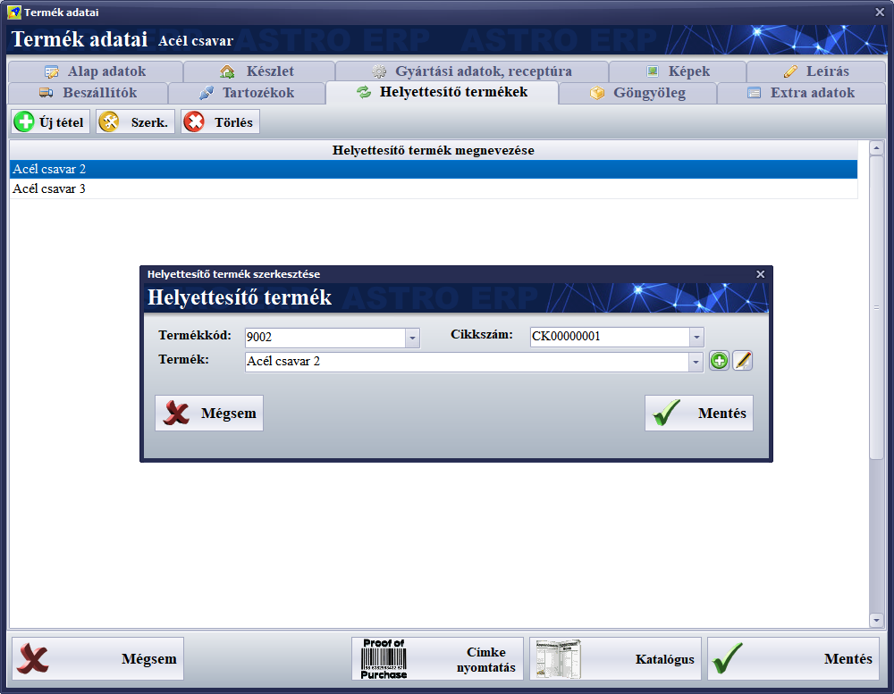
/ Accessories tab
On this page, you can add accessories to the product. Accessories are also products that are related to this product.
To add a new accessory to your product, follow these steps:
1. Afterpressingthe New Item button, the supplied editor panel appears.
2. Select the accessory from the Accessories drop-down list. If the product you are looking for is not found in the product body, you can create a new product with the right button first.
3. Next, you must specify the quantity of the accessory product in its default quantity unit.
4. Select the accessory type:
o Optional accessory (if the accessory is sold separately).
o The main product already contains this accessory at the factory .
o Must be sold together with the main product, but shown as a separate item .
5. Use the Save button to save the accessory that will appear in the accessory list.
Use the Edit button next to the New Item button to edit, and the Delete button to delete the selected accessory from the list.
If we run a webshop, the accessory data is also uploaded to the shop database, so customers will see what other products belong to this product.
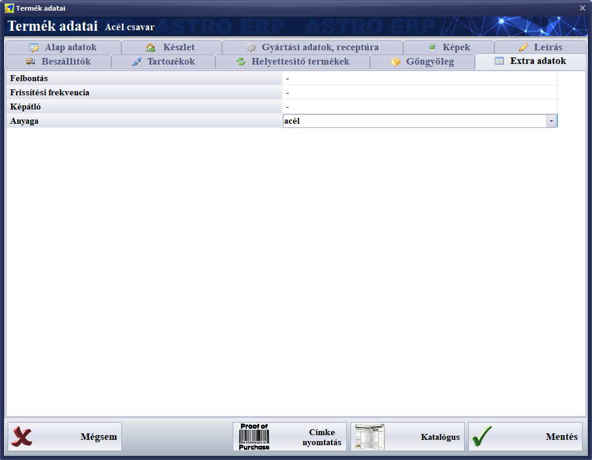
/ Substitute Products Tab
The replacement product is used to replace the replacement product if it is not in stock or left out of the original product.
To create a new replacement product, follow these steps:
1. Afterpressingthe New Item button, the Substitute Item Editor panel appears.
2. In theData field labeled Product, selectthe replacement product.
3. The Save button to save, then the replacement product will appear in the list.
Use the Edit button next to the New Item button to edit, and the Delete button to delete the selected item in the list.
If you run a webshop, the replacement product data will be uploaded to the shop database so that customers will see which similar products can replace the product.
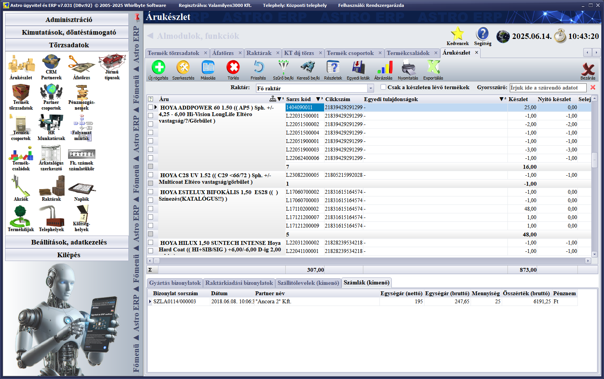
/ Extra Data Sheet
For product groups, you can create a unique property list. We can add value to these qualities here.
On the left you can see the properties and edit the values on the right.
To edit the data, simply click on the appropriate line and enter anything freely. Edit with the ENTER key.
The data you provide here will be selected next to the drop-down list.
If you run a webshop, this property list can be uploaded to the shop database and displayed next to the product.
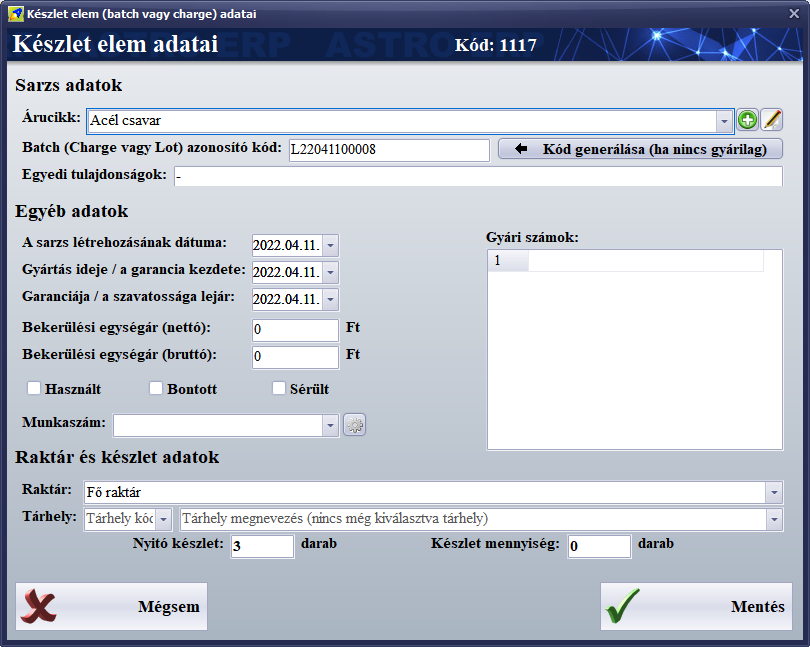
If you have provided all the necessary data for the product, you can
save it with Save . The product will then appear in the product body list.
In order to save the new product or to cross the other pages, the following mandatory data must be filled out (not empty) on the Basic Data tab :
ü Product code
ü Product group
ü Character
ü VAT
ü Product name
ü Barcode
You can also see a label print button at the bottom of the window , after which the label printer window appears with the product name and the selected price.
Label printing can be done with a special label printer.
There is another button called Catalog , which after clicking on the price list appears.
The price catalog is a special custom module that can be used to create custom product configurations with unique prices.
This price catalog should be used in specific areas where the properties or equipment of the products determine its parameters and pricing (for example, optical glasses, car sales, etc.).
If you have modified a product but do not want your data to be stored, you can quit the Cancel button. At this point, only the basic data will not be saved, but the related data will be (because they will be included in the database at the time of the modification).
5.2.10. stock holdings
This module is used to list and directly modify inventory items (batches).
Basically, you do not need to edit your inventory data, because the software automatically manages your warehouse revenue, warehouse release, warehouse inventory movement, and inventory records. Inventory-related lists (inventory list, inventory, average margins, stock card) are listed under Statements, Decision Support , and Inventory Lists .
This module is discussed in two parts in this chapter. First, you will find a list of inventory items and then a datasheet for editing your stock items (batches).
5.2.10.1. List of inventory items
When we enter the stock module, a list of stock items (batches) stored in the inventory is displayed.
The following highlighted filters appear above the list:
Ø Only products in stock: display only stock items with stock levels greater than zero.
Ø Warehouse: The warehouse in which the inventory items (batches) are displayed in the list.
If you want to see more information about a product in the list, you can see the details bar by turning on the details mode .
The following tabs appear on this bar:
Ø Production vouchers: Production vouchers appear in the list that created the stock item (batch).
Ø Warehouse Release Documents: Warehouse voucher vouchers appear in the list where a specific quantity was issued from the stock item.
Ø Shipment (Outbound): Outbound shipment vouchers for which we have issued a quantity from the stock item.
Ø Invoices (outbound): Outgoing invoices for which we have issued a quantity of inventory item are displayed.
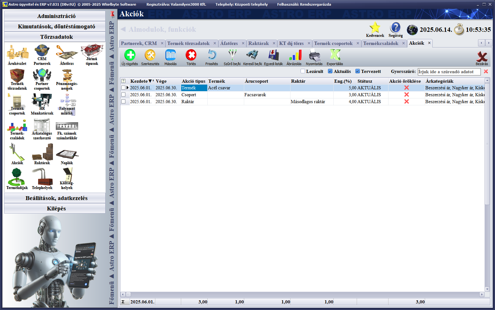
5.2.10.2. Editing inventory items
If you want to modify a stock item or register a new item, the edit window will appear.
Be careful when editing inventory items. If not, do not edit the set directly. Editing or deleting inventory items can be done at your own risk.
Here is the following information:
· Commodity: this is where you can choose the product to which the stock item belongs.
· Batch (Charge or Lot) identification code: identifier of the stock item (batch), can be used as a charge or LOT number. If this field is blank and we cannot copy anything here, you can use the Generate Code button to create a new LOT number for the rows.
· Custom properties: here you can write a unique attribute or comment to the stock item.
· Batch Creation Date: The day the stock item was created.
· Production time / start of warranty: If the product is manufactured by your own company, the date of manufacture is here, otherwise the warranty period.
· Warranty / Warranty Expires: The date on which the Product loses its warranty or warranty.
· Input unit price (net): If the product was purchased from a supplier, it will be included here at its net purchase price.
· Entry unit price (gross): the net unit price multiplied by the VAT value set on the product.
· Used: if used items are included in the stock item.
· Discontinued: if the item contains decomposed products.
· Damaged: if the stock item contains damaged but still functioning, marketable products.
· Work count: work sets can be used to link different inventory items with production and vouchers.
· Warehouse: the warehouse where the item is located.
· Storage: is the storage space on which the stock item is located within the warehouse.
· Opening Kit: The stock of stock item stock.
· Inventory Quantity: The quantity of stock in the stock item in stock.
· Factory Numbers: A list of individual factory numbers for products in the stock item. All serial numbers are added to a new line.
When you have finished editing the stock item, you can save the data with the Save button. If you just viewed the item details, go to Cancel or simply close the window with the x in the upper right corner.
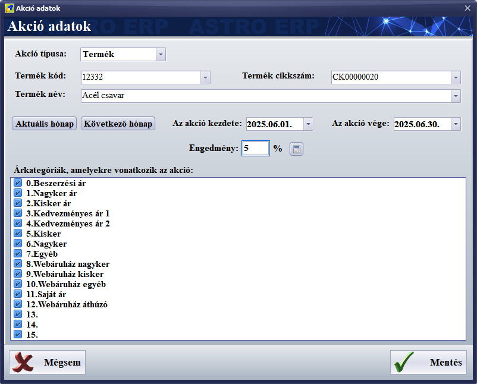
5.2.11. Specials
In the action module, you can define discount actions for a particular product, product group, or warehouse.
First we list the action list, then the action editor window.
5.2.11.1. List of actions
Entering the action module displays the list of actions.
The following high-priority filters are listed above the list:
Ø Closed: actions that have already been completed are displayed.
Ø Actual: actions that are between today and the closing date are displayed.
Ø Planned: Actions that start later than today appear
The status column in the list also indicates that the action is closed, current, or planned.
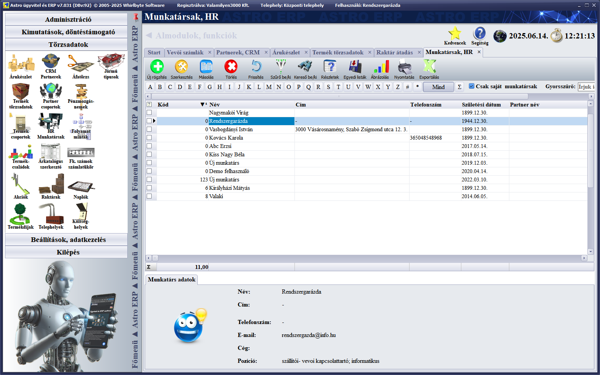
5.2.11.2. The action editor window
If you want to start a new action or edit an existing action, the action editor window will appear.
In the action window, you can edit the following data:
· Action type: Choose here what the action should apply. These can be:
o Product: if the action concerns a product. In this case, a product selection field will appear under the type of action, here you will have to specify the product.
o Product group: if the action applies to a product group. In this case, besides the type of action, there is an option to inherit the action for the descendant groups and a product group selection field below which the product group to which the action applies is selected.
o Warehouse: if the action applies to a warehouse. In this case, a store selection field will appear under the type of action where you need to specify the warehouse in which all the products in the action will be covered.
· Current month button: The start of the action will be the first day of the current month, the end will be the last day of the month.
· Next Month Button: The beginning of the action will be the first day of the following month, the end will be the last day of the following month.
· Start of the action : the start date of the action.
· End of action : The end of the action.
· Discount: the amount of the action, in percentage. To the right, you will see a button pressed to display an auxiliary function that will help you calculate the percentage of the action based on the original price and promotional price you specify.
· Price categories : Select the price categories for which you want the action to apply.
When you are done completing the data, you can save the action with the Save button, or you can use the Next button to record a new action immediately (by pressing the ENTER button on the discount field, the last action is done automatically).
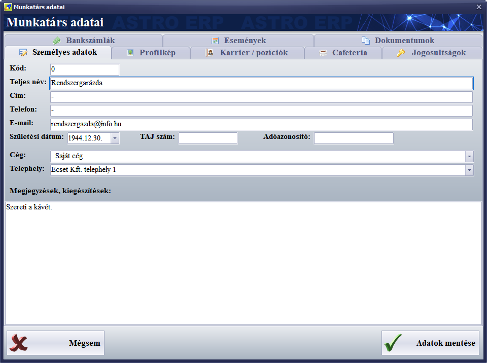
5.2.12. HR, co-workers
In this module, you can manage staff who are also users of the software.
The module includes HR functions, here you can define the permissions of the staff.
5.2.12.1. List of employees
If you enter the HR, staff module, you will see a list of employees.
The following high-priority filters are listed above the list:
Ø Starter Pager Filter: Use this filter to narrow down the list to the name of the selected letter.
Ø Only your own staff: if this option is enabled, you will only see your own staff in the list. If you turn it off, all partners' partners will be shown (partners can be recruited).
If you want to see more information about a colleague in the list, you can see the details bar by turning on the details mode .
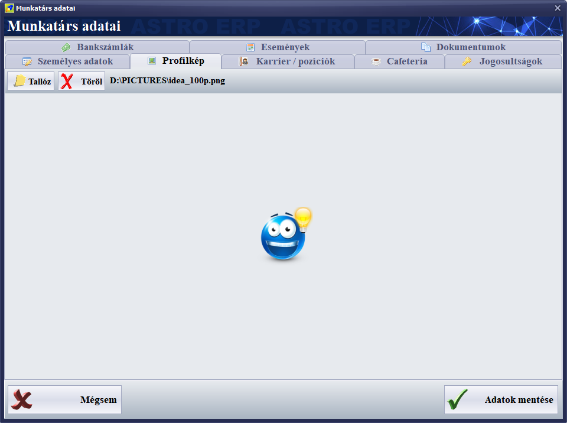
5.2.12.2. Collaboration panel for co-workers
If you are recording a new employee or editing a selected one, you will see the editor panel.
This is a complex module, so the data is on multiple pages. These pages are as follows:
/
Personal, basic data sheet
· You can enter personal, basic data for this employee on this page, which are:
· Full name: Full name of the employee. Required , but you do not need to enter your real or full name, as the software cannot verify this. This is not a login username! The user name will then be specified on the permissions tab.
· Address: temporary or permanent address of the employee. It's not neccessary.
· Telephone: contact information of the employee. It's not neccessary.
· Email: the email address of the employee. It's not neccessary.
· Date of birth: date of birth of the worker. It's not neccessary.
· TAJ number: the social security number of the employee. It's not neccessary.
· Tax ID: Employee Tax ID. It's not neccessary.
· Company: Here you have to choose the company where the employee works. In the case of your own colleague, you have a "own company" here.
· Location: if the company has more than one location, then the site where the employee performs the tasks must be selected.
· Comments, additions: Anything else can be written and recorded here.
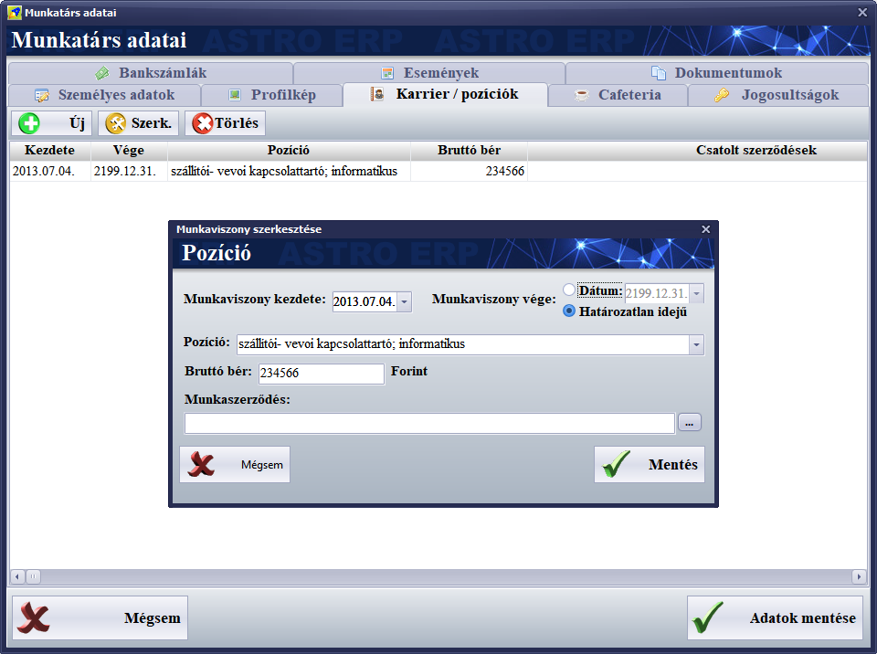
/
Profile picture
Use this tab to attach a profile image to the user.
Use the Browse button to find the file you want to attach, and the Delete button to delete the attachment.
This attached image will appear in the list details view before the employee's data.
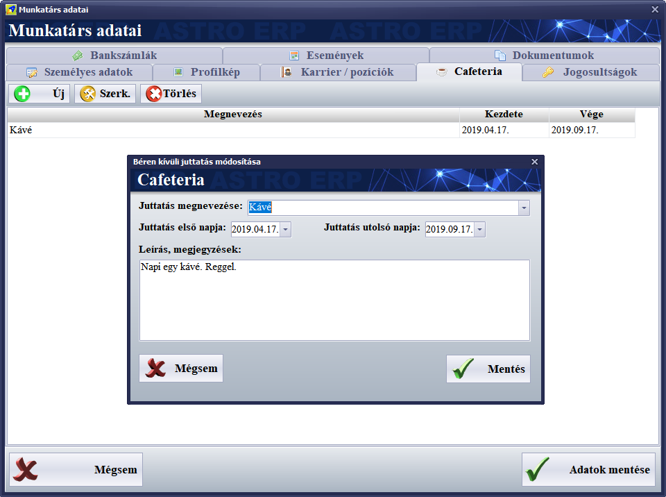
/
Career, positions
Employee positions can be recorded on this page.
Steps to record a new position in steps:
1. After pressingthe New button, the position editor panel appears.
2. We must specify thedate of commencement of employment .
3. Enter the end date ofthe employment relationship . If the employment relationship is of indefinite duration , this should be selected.
4. Enter thename ofthe position and job. Next time this position name can be selected.
5. We can specify the gross monthly salary of the employee.
6. You can attach your work contract to the right with the [ ] browse button.
7. Use the Save button to save the data that is then displayed in the list.
Use the Edit button to change the position of a member of the staff member, or press the Delete button to delete it from the list.
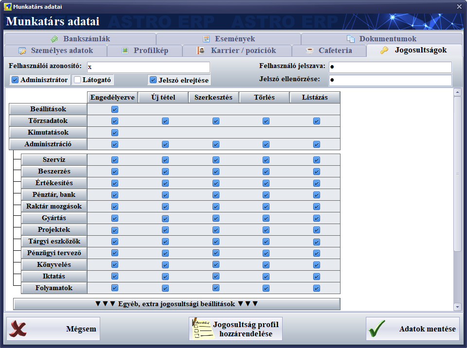
/
Cafeteria
If a colleague receives a fringe benefit, it can be recorded here.
How to fix a new cafeteria in steps:
1. After pressingthe New button, the cafeteria editing panel appears.
2. Enter the name of the allowance .
3. Enter the first and last day of the allowance .
4. You can record other descriptions and comments about the benefit.
5. Use the Save button to save the data. The benefit will then appear in the list.
Use the Edit button to change the fringe benefit, and you can delete it from the list using the Delete button.
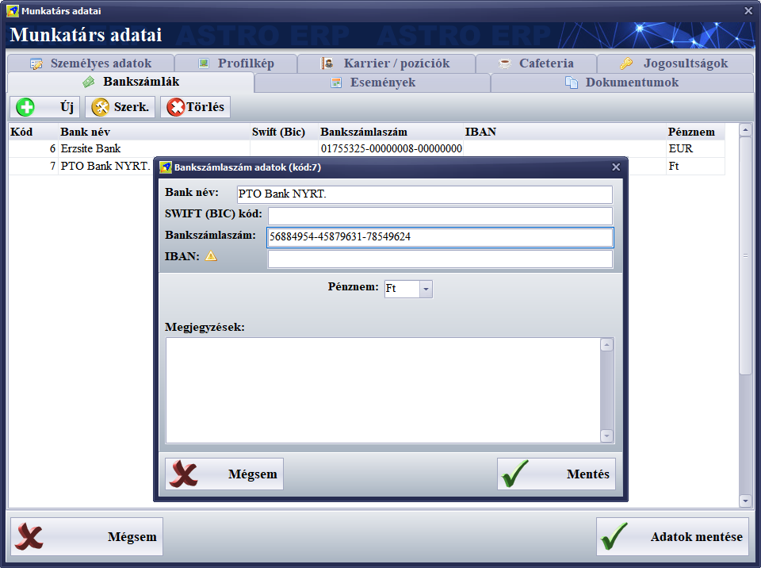
/
Privileges
In the case of our own staff, the eligibility settings must be completed.
These are:
· User ID: this will be specified in the user name text box on the software login panel.
· User Password: In the software login panel, you will need to enter this in the password text box to log in.
· Administrator: grants administrator rights in the software.
· Visitor: Limited access to software modules and functions.
· Hide password: If you turn it off, your password will be visible.
Most of the page shows permissions per category and module. The software uses simplified privilege management on a statistical basis, so it is transparent for the first time who has rights. Here the function of each switch is clear.
There are two more switches below the authorization table:
· You can change your bids on the invoice and in the merchandise: turn on if you don't want the user to overwrite the prices.
· You can change permissions (including your own): this should be left on at least one user so that everyone does not exclude themselves from the system or some features, because then only the developer can help.
Below is the Assign Assignment Profile button. In the settings main menu, you can create authority profiles. These profiles can be copied to the authorization table.
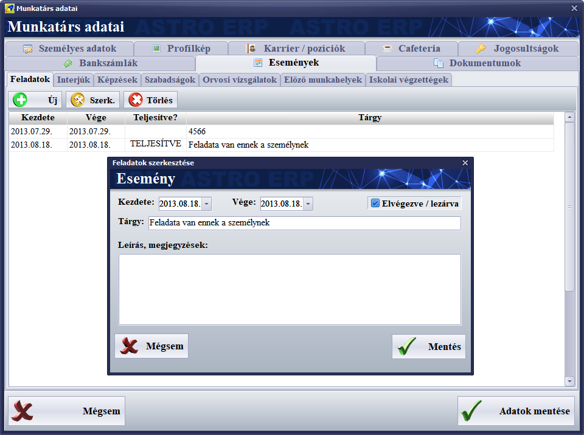
/
Bank accounts
On this page we can record the bank accounts of the employee.
How to set up a new bank account in steps:
1. After pressingthe New button, the bank account editing panel appears.
2. Enter the bank name .
3. For a foreign bank account, enter the SWIFT code .
4. Enter the exact bank account number .
5. For a foreign bank account, enter the IBAN . If the IBAN field is blank or contains invalid data, a yellow triangle with an exclamation mark (an audit algorithm running to the IBAN) is displayed after the IBAN.
6. Use the Save button to save the data. The bank account will then appear in the list.
The Edit button allows you to change your bank account, and you can delete it from the list using the Delete button.
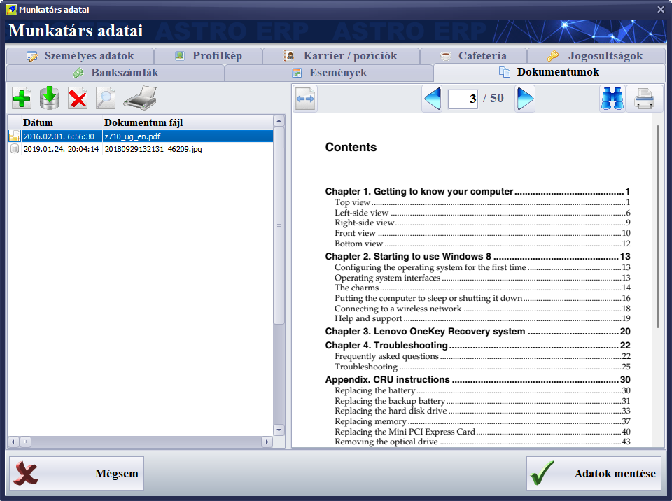
/
Events
Here you can record tasks and other events related to the user.
How to record a new event in steps:
1. After pressingthe New button, the Event Editor panel appears.
2. Enter the start and end of the event.
3. When the job is completed or the event is closed, you can turn on the Executed / Closed switch.
4. Enter the subject of the event.
5. The description, comment is partly explained in the task or event.
6. Use the Save button to save the data. The event will then appear in the list.
Use the Edit button to change the selected event in the list, and to delete it from the list, press Delete .
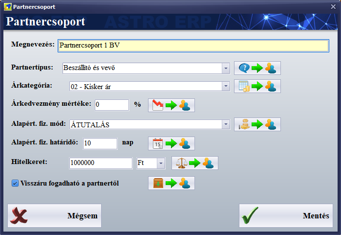
/
Documents
On this page, you can attach documents to your colleague.
Documents can be image files or document files.
On the left is a list of attached documents. The first column shows a small pictogram before the date of the files. If this is a yellow folder, the document remains in its original location and can be opened from there. If the pictogram is a gray cylinder, the document is saved in the database and will always be saved to the local computer when it is opened.
The preview image of the selected document is displayed on the right.
Buttons on the left-hand side of the list on the left-hand side, from left to right:
Ø Attach a new document: simple attachment, the document opens from its original location.
Ø Add and save a new document to the database: the document will be placed in the database (up to 5 MB) and the file will be saved to the local computer when opened.
Ø Delete Document Attachment: Deletes document attachment. If you have saved the document in the database, it will be deleted from it.
Ø Open a Document: Opens the document with the default program assigned to the document format (according to the operating system settings).
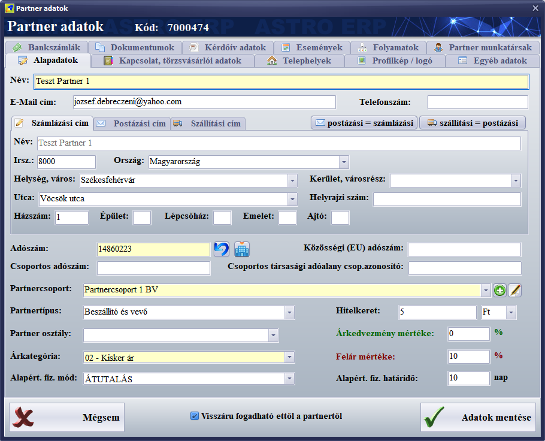
5.2.13. partner Groups
As with the products, the partners can be classified into different groups. The group will be selected on the partner data sheet.
These groups can be created in this module.
The partner group consists of one data, the group name.
When you add a new contact group or edit an existing group, the Partner Group Editor panel appears.
In this panel, we only need to enter one data: the name of the partner group.
When finished, the Save button saves the group.
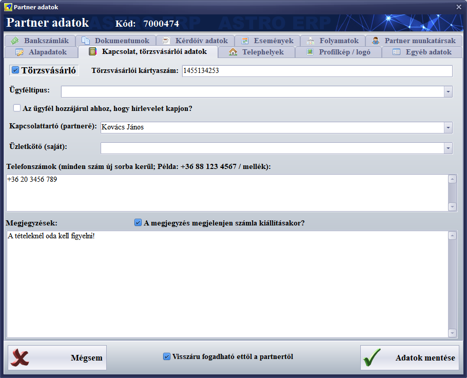
5.2.14. CRM, partners
You can manage your partner data in this menu item.
5.2.14.1. List of partners
When you enter the module, a list of partners appears.
Above the list of partners, there is a first-page paging filter , which allows us to narrow the list to the names that begin with the selected letter.
5.2.14.2. The Partner Editor Panel
If you add a new partner or edit an existing one, the Partner Editor panel appears.
Partner data is divided into several tabs:
/
Basic data
On this page you can record the most important data of the partner, many of which are mandatory.
These data are:
· Name: the full name of the partner, which includes the abbreviation of the company form (in case of a private contractor). Required data!
· Email Address: The primary email address of the partner. The software sends the documents, payment reminders, alerts and other letters to this address.
· Billing / mailing / shipping address: For all three types of addresses, the same data must be provided, with a name and tagged address information.
o Billing address: the name and address where the partner's location is located will also be invoiced to this address. Mandatory for company!
o Mailing address: the name and address to which you can send your partner's letters.
o Shipping address: the name and address to which you can send parcels, parcels, shipments to the partner.
The two buttons on the right above the address data:
o Use the first button to copy the billing address information to the mailing address data.
o Use the second button to copy mailing address data to shipping address data.
· Tax number: the partner's domestic tax number. It is not required for an individual or for a foreign company. Mandatory for domestic companies!
· Community (EU) tax number: If the company has an EU tax number, it must be completed.
· Group tax number: If the company is a member of a group of companies, the group tax number within the group must be entered here.
· Group Corporate Taxpayer Identifier: If the company is a member of a group of companies, the taxpayer group ID must be entered here.
· Partner type : type of partner, one of the following is mandatory:
o Supplier
o Buyer
o Supplier and buyer
o Own Company
o Health Fund
o Individual
o Possible customer
o Manufacturer
· Partner Group : A group of partners. Data to be selected from the partner group strain .
· Price category: Here you can choose a price category. When a partner sells something, the system will automatically offer the price for this price category.
· Discount rate: if we give the partner an extra discount on our prices, then it should be entered here.
· Default Payment Method: The preferred payment method for the partner. The customer will automatically be offered this on the partner account.
· Default payment deadline: the payment deadline preferred by the partner, calculated in days. It is possible to agree with the partner in advance what payment deadline you are willing to pay and to enter here.
· Credit line: the amount above which a partner is not allowed to sell anything.
· Returns can be received from the partner: if we withdraw the goods from the partner, it can be switched on.
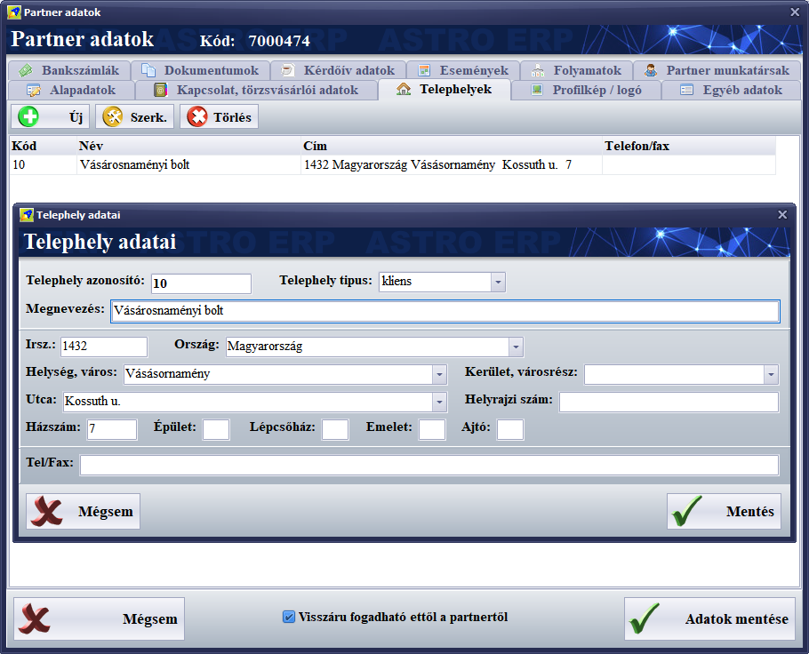
/
Contact, customer loyalty
You can enter additional contact and loyalty data on this page:
· Master Purchaser: If our partner is a loyal customer, we can indicate this to the software by turning on this switch. The software can automatically make the partners a regular customer, and its options can be defined in program settings.
· Loyalty card number: If the partner is a loyal customer and we have issued a loyalty card, you must enter the number here. If you enter or read the card number of the loyalty card in a document, sales card number field, you will automatically select the partner and receive the appropriate discounts on the items (loyalty discounts can be defined in the program settings).
· Customer type : other type of customer. You can write anything here freely and you will be able to select it from the drop-down list next time.
· The customer agrees to receive a newsletter: if the partner has agreed to receive a newsletter, it can be marked. Newsletters go to the e-mail address provided on the Basic Data tab. The software includes a newsletter module where newsletters can be compiled and campaigns launched.
· Contact person (partner): the partner with whom we are in contact. The name can be written freely.
· Dealer (own): our own salesperson who keeps in touch with the partner. You can choose from our own staff.
· Phone Numbers: Write contact details for your partner here. If you enter more than one number, you must write each one in a new line. You can start a new line by simultaneously pressing the Shift + Enter buttons.
· Notes: Write comments, information about the partner here. You can start a new line by simultaneously pressing the Shift + Enter buttons.
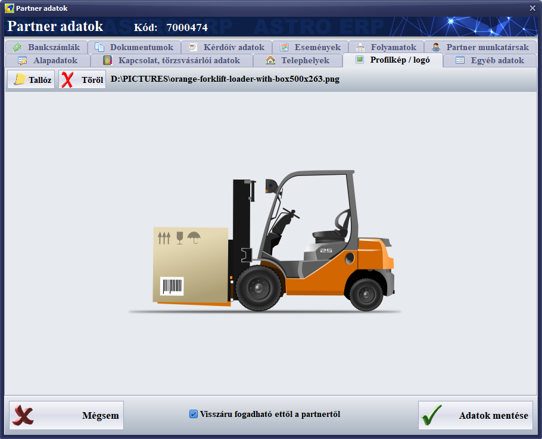
/
Locations
Here you can record the partner's locations. This is useful if the partner has more than one location and it is different to which one to request delivery.
The steps to record your location are:
1. After pressingthe New button, the site editor panel will appear (this is the same as the one displayed when recording your own sites).
2. Enter the partner's location ID .
3. Fill in the name field.
4. Enter the address of the partner's location .
5. You can specify the telephone contact ofthe site.
6. Use the Save button to save the data. The site will then appear in the list.
Use the Edit button to change the selected location in the list, and Delete to delete it from the list.
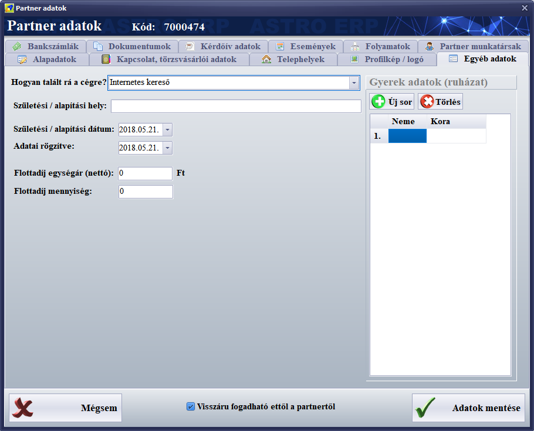
/
Profile picture / logo
Here we can attach a picture to the partner, which can be the partner's logo.
Use the Browse button to find and attach the appropriate image.
The Delete button to remove the coupling.
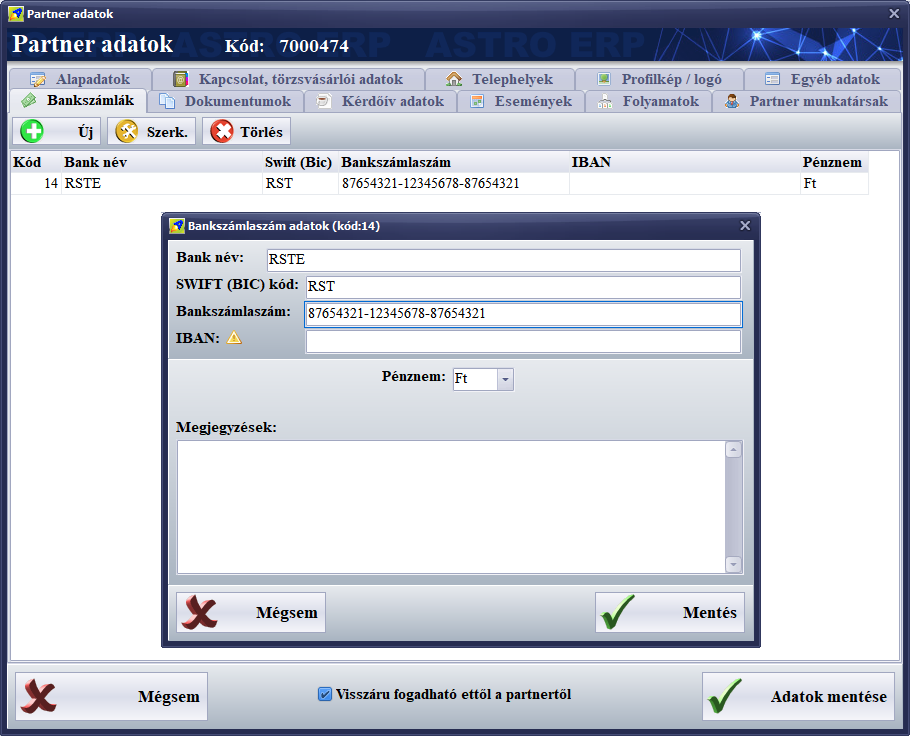
/
Other data
This page provides special CRM data for specific development needs.
/
Bank accounts
On this page we can record the partner bank accounts.
How to set up a new bank account in steps:
1. After pressingthe New button, the bank account editing panel appears.
2. Enter the bank name .
3. For a foreign bank account, enter the SWIFT code .
4. Enter the exact bank account number .
5. For a foreign bank account, enter the IBAN . If the IBAN field is blank or contains invalid data, a yellow triangle with an exclamation mark (an audit algorithm running to the IBAN) is displayed after the IBAN.
6. Use the Save button to save the data. The bank account will then appear in the list.
The Edit button allows you to change your bank account, and you can delete it from the list using the Delete button.
/
Documents
Use this tab to attach documents to your partner.
Documents can be image files or document files.
On the left is a list of attached documents. The first column shows a small pictogram before the date of the files. If this is a yellow folder, the document remains in its original location and can be opened from there. If the pictogram is a gray cylinder, the document is saved in the database and will always be saved to the local computer when it is opened.
The preview image of the selected document is displayed on the right.
Buttons on the left-hand side of the list on the left-hand side, from left to right:
Ø Attach a new document: simple attachment, the document opens from its original location.
Ø Add and save a new document to the database: the document will be placed in the database (up to 5 MB) and the file will be saved to the local computer when opened.
Ø Delete Document Attachment: Deletes document attachment. If you have saved the document in the database, it will be deleted from it.
Ø Open a Document: Opens the document with the default program assigned to the document format (according to the operating system settings).
/
Questionnaire data
In the program settings you can define a questionnaire for the partners.
On this page you can fill out this questionnaire.
The left column shows the questions.
You can write the answers in the right column.
/
Events
Here you can record tasks and other events related to the partner.
How to record a new event in steps:
1. After pressingthe New button, the Event Editor panel appears.
2. Enter the start and end of the event.
3. When the job is completed or the event is closed, you can turn on the Executed / Closed switch.
4. Enter the subject of the event.
5. The description, comment is partly explained in the task or event.
6. Use the Save button to save the data. The event will then appear in the list.
Use the Edit button to change the selected event in the list, and to delete it from the list, press Delete .
/
Processes
Module under development.
Here you will see a table of activities that can be associated with the partner, as a process that is combined with the same work numbers.
/
Partner staff
On this page, you can add staff to your partner.
When you add a new employee or edit a list in the list, you
will see an editor panel for the staff (you can read it in the appropriate section).
The affiliate company will already be selected in the partner data sheet, do not change this setting (otherwise the employee will be transferred to another company).
Use the Break button to delete the selected partner member.
If we have completed the compilation of the contact and completed at least the mandatory data, then the Save Data button will save the contact.
5.3. Administration
5.3.0. Document management, document operation
This chapter describes how to manage your software. In the other chapters, this manual indicates only the differences and unique data.
The software can produce 32 types of documents.
Of which 23 vouchers are handled by a module, always configured for different documents:
· Supplier side: invoice, delivery note, receipt (attachment), proforma (fee request), order, quotation.
· Customer side: invoice, delivery note, receipt (attachment), manual invoice, auction, proforma (fee request), order, quotation.
· Warranty management: warranty, warranty, warranty, warranty replacement, release for warranty, warranty inspection.
· Warehouse site: inventory, warehouse entry, warehouse release.
This common module will now be presented.
Important information about documents:
v
Document copying, inheritance:
An important feature of the documents is that one of them can be made with one of its items.
For example, we can make a delivery note from one supplier order, one invoice that is automatically closed and the receipt of the stock in stock is automatically completed:
Here, it is important to note that in the case of vouchers, the real inventory movement is carried out by warehouse receipts and warehouse release documents. These two vouchers are automatically generated upon completion of delivery notes , invoices, receipt attachments, and, if they are still unmanaged , in stock.
Copying and inheriting the documents will be discussed below.
v
Pickup:
It is also possible to take items from multiple vouchers to a document.
For example, you can receive incoming items from multiple orders for an incoming delivery note or invoice:
The software records the amount of documents transferred to other vouchers and the amount that can be transferred.
Thus, a voucher and batch chain is created that can consist of more vouchers and items and usually ends with a warehouse operation.
Below is the module that can be used for picking.
v
Document Serial Numbers:
It is very important to note that the documents run on a separate line number range per site and currency, ie in different virtual vouchers.
In program settings, you can set the serial number type for each document, leave it with default settings, or at least your customer account.
The structure and management of the voucher module will be explained below.
5.3.0.1. List of documents
When you enter a document module, you can see the list of documents. This list is similar for every document.
On the toolbar above the list, you can find the buttons you already know, but beyond the standard, there are additional features available here:
Ø NAV report: invoices issued to Hungarian partners for HUF 100,000 or above VAT must be reported to the tax administration's online account registration system. With this feature, you can manually start reporting unposted accounts or checking the status of accounts that have already been reported (the invoice report can be considered successful if your tax system has processed it). Customer accounts are reported individually after they are closed. If you do not succeed then you should use this feature. This button appears only in the Customer Accounts module.
It's easy to use, just press the button, the software starts to work and when you are done, you can see which documents you have succeeded or failed to report.
Ø Equalization: the button is displayed in the customer and supplier account module. If you choose an account, you can use this feature to quickly sign up for your account and cash flows (bank, cashier) to see how much you have been billed for.
Here, all the necessary data (which we check) will be filled out by default, and only the amount to be settled will be entered and the balance will be closed with the Save button.
Ø Bank Statement: Also appears only in Customer and Supplier Account Module. It allows you to process bank extract files automatically so that your invoices are automatically settled. If we ask our customers to include the exact invoice number in the note when making the transfer, the software will recognize from the bank statement which invoice the customer has settled.
First, select the bank (currently the software can process the extract file of three banks), then browse the extract file, and then use the Scan button to perform the processing.
You can also see a Loan Verification button here , which displays the Loan Management module (this module will be discussed later in this manual).
There is also the option to turn on details mode for your documents , with the following tabs (may expand later):
¤ Document Items: You can see the details of items recorded on the voucher.
¤ Balance: a list of voucher settlements with the serial number, execution time, amount, currency of the bank or cashier cash flow document.
¤ Employee Data: Details of the employee who issued the document are displayed on the tab.
Below the toolbar are the highlighted filters and list settings that are:
Ø Year: The list shows only the documents issued in the selected year.
Ø Month: Only the documents displayed in the selected month are shown in the list. Here you can choose to show the vouchers for each month.
Ø Currency: filtering for the currency of documents.
Ø Location: Filtering for the site where the vouchers are set. Here are all site settings to show all of your site certificates at once.
Ø List of items: this is a special way of listing documents. If you turn it on, the list will show the items in the list, grouped according to each document. This allows us to create additional useful individual statements.
Ø Quick filter: this allows you to narrow the entire list to the text or data you enter. To help you find your data quickly.
5.3.0.2. The document editor window
When you create a new document, the document editor window appears with the name and serial number of the document at the top.
New documents that have not been closed yet have only one temporary serial number. Receipts will only receive a final serial number at the moment of their closure.
The picture shows the customer account document editor:
The document window consists of two parts. In the upper section, you can edit the details of the document, the items in the lower part, or change the financial balance of the document or attach documents to it.
Above the tabs on the top, three switches to the right are related to the nature and management of the document:
þ Accounts Receivable: If we have agreed with the partner that the executing party will invoice more than one successive at a time, then we can create a summary account (the items can be grouped with the item group). If you create such a bill, you must activate this switch.
þ Self-billing: The invoice issuance may be issued by the buyer of the products or by the recipient of the services. In this case, this switch must be activated.
þ Email: If this option is active, the document is not only printed but also made into a PDF file that the software sends to the email address of the partner.
þ Archiv: If you want to exclude a document from the official framework (ie not used for any official transaction), you must activate this option.
There are four switches to the right of the items in the document that are related to managing the items:
þ KT / CSK Fees: Displays environmental product charges on the voucher (invoice). When we turn on, which products we have given environmental product charges will be included in the summary of product fees and invoices when commenting on their items.
þ Inventory Movement: Document items carry stock movements. If it is active on a voucher, it will automatically generate a warehouse receipt or warehouse release when it is closed (because these last two documents carry the real set of moves).
þ Reverse VAT: if the customer pays the VAT on the goods and services listed on the invoice, ie there are reverse VAT items on the voucher, this option must be enabled.
þ VAT-free: If you want to issue an invoice without VAT (or we have received it), we need to activate this option. If you turn it on, the VAT key for all items will be 0%, if you turn it off, the VAT key will match the items again.
Document details are on three tabs:
/
Header data
Here you can enter the following data, depending on the type of document in question:
· Inventory Type: Only inventory can be selected by inventory method:
o Part of warehouse: if you want to inventory only part of your warehouse stock. Only the quantities of the inventories will be corrected.
o Whole warehouse: if you want to inventory the entire warehouse. In this case, the quantities of non-inventory items will be written to zero in the inventory.
o Opening kit: If you add a new warehouse, you need to add an opening kit. Its operation is similar to the inventory of the entire warehouse.
· Inventory on multiple machines: Optional on inventory only . If you want to count on more than one computer, you need to select it. When checked, the inventory voucher appears in the inventory list to open on other computers and add items.
· Alien Serial Number: Only data that can be specified on supplier documents . Here you can enter the original serial number of the received receipt.
· Order number: Here you can enter the serial number of the other order document related to the document.
· Special ID: can only be specified on supplier documents . Space reserved for arbitrary identification data.
· Status: the status of the document (unlocked, closed, completed, etc.).
· Partner: this is where the partner can be selected (which appears on the voucher, mandatory data ). You can enter a loyalty card or master card number in the text card number text field (or read it with a barcode reader) in front of the partner selection field, so the software automatically selects the contact associated with the number.
· Partner Delivery Address: The one that appears on the document is required to select the address to which the products on the document will be delivered.
· Partner bank account: appears on supplier vouchers. If the incoming voucher is an invoice and a payment method is set, then you must select it.
· Date: the date of issue of the document.
· Performance: the time the services are displayed on the voucher, or the date on which the items on the items were delivered.
· Method of payment: means of payment for the voucher (cash, bank transfer, bank card, receipt, etc.). On which voucher this data is displayed, it is mandatory to fill in this data.
· Payment deadline: the deadline for the financial execution of the document.
· Currency: the currency in which the items on the voucher are counted.
· Currency: if the currency is different from the default currency of the system (which is currently Ft), then the daily exchange rate must be entered here if it is not loaded automatically. In the default currency of the system (which is now Ft), it must always be 1.
· My bank account: appears only on customer receipts . We need to select the bank account numbers of our own company for which we are waiting for the transfer of the partner. In the case of a cash account, the software also requests this information in case the customer still settles some of the amount by bank transfer.
· Cashier: alsoappears on customer receipts only . We have to select the cashier into which the buyer will pay the amount in the case of a cash account. It is also advisable to select a transfer account, as it may happen that the buyer pays the money in cash.
· Warehouse: The warehouse to which the product moves recorded on the document are linked. Required data. It should also be specified if there is only a service on the invoice because it may occur when the document is derived or corrected, that products are still added to it.
· Work Count: Work Numbers Accompany Documents and Activities in Other Modules to Workflow. The field can be dropped and the appropriate work number can be selected or a new work number can be generated with the button to the right of the field. Not mandatory.
/
More details
This page contains only a few additional data that can be filled out if necessary:
· Partner country: the country of a foreign partner can be selected from a country list where we deliver the items on the document.
· Freight Volume: The way to share costs. Enter the code for the correct freight rate here. Freely editable field, the data you enter will be selectable later.
· Mode of transport : method of delivery. You can freely enter any information that will be available next time.
· Financial representative: if an intermediary financial agent complicates the transaction between us and the partner specified on the voucher, you must select the financial representative here from the partner body (where you must be previously registered).
/
Comments
Here you can write four notes on the document (the default comments can be edited in the program settings):
· Basic note: this note will appear on any printed or saved document in PDF.
· Remittance: this note will only appear on the printed document or saved in PDF if it is a payment method.
· Legal notice: this note also appears only in the case of a transfer, and we may warn the partner here about actions and other legal obligations due to late payment.
· Other: the text that you write here appears after the comments.
The lower part of the window also occupies three tabs:
/
Items
This page is from the list of items and the associated toolbar.
The buttons on the toolbar are:
Ø New Item: Add a new item to the list. The batch editor window appears, in which all the data in the document batch can be edited. (The item editor is discussed below in this manual.)
Ø Edit: open the selected item in the list for editing. The editor window appears, in which you can modify the item details.
Ø Delete Item: delete the selected item. It is also possible to delete multiple items quickly without question by repeatedly pressingthe Shift + Del buttons.
Ø Item Receipt : A module is displayed that allows you to transfer items from multiple other documents to the current document (picking). (This manual is discussed below in this manual).
Ø Fast editing mode: if you turn on quick editing mode, the table changes and you can record or edit items directly in the table, all data can be edited. If the quick editing mode is off, only the quantities can be modified directly in the table.
In fast editing mode, you can start recording the first item with the small New Item button in the upper left corner of the table (this is not the same as the large New Item button), then enter the data from column to column by pressing ENTER . When you reach the end of the line, you will automatically receive a new line. The last line that you missed will be automatically deleted when you save or close the document.
Ø Search: A search window will appear that lets you search for the text or number you entered in the item list:
Ø Data collector: if a data collector is configured, you can retrieve the collected item data (the serial numbers, batch numbers generate the item list).
Ø Assemble: based on the selected item, a new production worksheet is opened.
Ø Disassemble: based on the selected item, a new dismantling worksheet opens.
Ø Batch Import: You can import an item list from an excel file (the format is fixed if you hold the mouse pointer over the button, this format is shown).
Ø Discount: All items can be discounted at the same time with this feature:
Ø Warehouse Reset: Displays only on an Inventory voucher, and immediately resets the entire stock of the selected warehouse. Double after confirmation.
Ø
List Generation: At the moment, it only appears on the inventory voucher, with the help of which you can put all the items to be listed in the list with two clicks, so that only the quantities have to be changed. It significantly speeds up the inventory process.
First you need to choose which product group products should be included in the list (you can specify whether you want to list the products of your descendant groups), then you can set whether to list only the items in stock and whether the amount of items to be displayed should be zero (if no, then the quantities show the current stock level, this is recommended).
Finally, after you press the Create Item List button, the list is created in which you only need to modify the quantities during inventory.
Ø Order by Partner: A vendor's order is displayed on a voucher, all inventory deficient products (below the minimum inventory level) are included in the list that can be ordered from a partner selected in the document header (the default supplier can be set on the product data sheet).
Ø Warehouse order: also a supplier order is displayed on a voucher, all inventory shortages (below the minimum inventory level) associated with the selected warehouse are included in the list.
Under the item toolbar, a bar is displayed, and the features listed here are:
§ Code Reading: This field allows you to read the barcodes of the products with a barcode reader that are automatically added to the item list. If a product is already in the list, its quantity will increase by one. If the product for the scanned code is not found, the field will turn red for one second.
§ Unit price net / gross: this switch is displayed in quick editing mode and can be set to show and see the net or gross unit price of the products directly in the table.
§ Fast filtering: only those rows that contain the text you type in the quick filter or other data will appear in the list.
Below this is the item list. The columns in the list can be rearranged, resized, but the order of the items is linked to the documents (as recorded), so we cannot sort them in order of our own.
The item list can operate in two modes: normal and the fast editing mode already described.
/
Balance
It was about settling the vouchers. On this page, you can view the voucher balancing items. Here you can add new payouts or re-write one before:
With the New Item button, you can add a new equalization to the voucher, edit with the Edit button to change the selected balance on the list, and the Delete button to delete the equalization.
/
Documents
On this page, you can attach files to the document.
Documents can be image files or document files.
On the left is a list of attached documents. The first column shows a small pictogram before the date of the files. If this is a yellow folder, the document remains in its original location and can be opened from there. If the pictogram is a gray cylinder, the document is saved in the database and will always be saved to the local computer when it is opened.
The preview image of the selected document is displayed on the right.
Buttons on the left-hand side of the list on the left-hand side, from left to right:
Ø Attach a new document: simple attachment, the document opens from its original location.
Ø Add and save a new document to the database: the document will be placed in the database (up to 5 MB) and the file will be saved to the local computer when opened.
Ø Delete Document Attachment: Deletes document attachment. If you have saved the document in the database, it will be deleted from it.
Ø Open a Document: Opens the document with the default program assigned to the document format (according to the operating system settings).
At the bottom of the document window, you'll find:
· Exhibited by: the self-employed person who made and closed the document. It will also appear on the printed (or saved to PDF) document.
· Net: the total net value of items on the voucher.
· VAT: the total value of VAT on the items on the voucher.
· Gross: the gross value of the items in the vouchers.
Ø Save and Exit: Use this button to save the document without closing and close the document window. So we can put the document back for later editing.
Ø Save: Use this button to save the current document details without leaving the document.
Ø New document based on this: we can create another document from the document. For example, one invoice from one delivery note can be used to make an invoice with the header and item details matched. There will be a relationship between the original and the new document and their items (unless we disconnect the link). The new document will be editable. This function works only with closed documents.
To use:
1. First you need to select the type of document you want to make from the current document.
2. You can set whether to attach the new document to this document (you should leave the connection unless you want a smooth copy).
3. You can select whether all items should be transferred to the new document or only those that have not yet been transferred to another document if the documents are connected.
4. Finally, create a new document with the Create Document button.
5. The current document closes and the new one opens, which can be edited.
Ø Cancel: We can cancel an already closed document. The reversed voucher will match the new one, with the difference that the quantities of the items will be opposite. In the event of reversal, it is possible to reverse the stock movement of the products. The cancellation voucher is immediately closed, there is no way to edit it.
Ø Correct: We can correct an already closed document. Then a new document will be created, listing the original items with the opposite sign, the original items below them, but with the original quantities. When the correction document is created, it is still possible to edit it.
Ø Print: Print the document or save it as a PDF file.
Ø Preview: view the print image of the document without printing.
Ø
Closing a document / completing a document: we can close the still unopened document. This will give the document a new serial number. In the case of a customer account, if it is to be reported, the data will be provided to the tax authority. When you move a set of documents, a warehouse entry or a warehouse release document is made automatically (because they carry a real stock move).
If you have opened an already closed document, you can use this button to mark the document as completed. If the voucher is an invoice, it will be automatically marked as completed if the total amount of the invoice is settled.
5.3.0.3. Edit document items
If you want to add a new item to the list using the New Item button on the toolbar above the list of items, or to modify any of the selected items with the Edit button, the item editor window appears.
The top line of the window shows what type of document is being edited, followed by the serial number of the document.
Below this is an information bar about the selected product, from which you can read the unit price of the product, the stock level, how much it is booked (in order), how much can be sold or can be returned.
You can then enter the following information:
Ø Barcode finder: if you are scanning with a barcode reader or manually entering the barcode of the product (which is acknowledged with the ENTER key when manually entered), the product corresponding to the barcode is automatically selected, then the cursor immediately jumps to the pricing table.
Ø Product Group: Here you can filter the list of product selections below for the specified product group.
þ Derived Groups: If you turn it on, products in the subgroups of the group set in the product group filter will also appear in the product selector.
Ø Product code: product selection based on product code.
Ø Item number: product selection by article number.
Ø Name: Select the product by its name.
þ Only in stock: if active, only products from the selected warehouse can be selected.
Ø Price category: we can choose the price for the selected product. By default, you will see the price category that belongs to your document partner. After the price category, there is a button that you can press to edit the price categories of the selected product.
Ø Unit price net / gross: Use this option to select whether the pricing table should be the net or gross unit price of the product.
Ø Price table: Here you can edit the item's price and quantity data and calculate the calculated values here.
The following columns and options are available here:
o Unit price: the unit price of the product. By default, the price for the price category specified by the partner is offered here by the software that we can modify.
o Quantity: quantity of product. By default, you get 1 here, which can be rewritten to the desired amount. It can also be a broken value. To write a negative amount here, first enter the amount and then press the minus [-] key on the keyboard.
o Unit: Quantity of the product. The default quantity unit set for the product is displayed here, and we can overwrite it if necessary.
o Net value: calculated data, product of product and quantity.
o VAT%: VAT rate set for the product. Cannot be modified to avoid accidental errors. If the voucher is free of VAT, then 0 will be displayed here if the reverse tax or a batch is free, it is also 0.
o Amount of VAT: calculated data, gross value minus net value.
o Gross value: calculated data, multiplying the net value by the VAT key.
o
Discount: In
this line you can give a discount on the unit price of the product. By default, the software fills in if the partner qualifies for a discount, and can then be modified.
The discounted values are shown to the right of the discount.
Ø Item group: used for a general account (previously mentioned), items will be grouped in the invoice if the same item item data is entered. In the case of a correction invoice, there will be two fixed text items, "Original Items" and "Modified Items".
Ø Cost center: If the item is eligible as an expense, you can choose a cost center (which comes from the cost center).
Ø Warehouse: the warehouse from which the specified quantity is withdrawn or added to the product. By default, the voucher will be stored here as well.
Ø Storage: The storage space within the warehouse that is reserved for the product.
You can enter additional information on the following tabs (tabs):
/
Comments
You can comment on the item. The comment will appear on the printed (or saved to PDF) document directly under the item.
/
Batch numbers, factory numbers, sizes
Here you can specify which batch (or LOT, batch) numbers of the item selected on the item, their unique serial numbers (the amount of which corresponds to the quantity of the product) and the individual size data (the dimensions can be defined on the product data sheet).
The individual data come under each other.
In the case of a batch, a batch number can be selected from a list.
Upon receipt, the specified batch number will take the products (in this case a batch number must be provided) and the serial numbers will be included in the batch.
When released, the software will deliver the batch number of items specified by the software by first extracting the specified number of products from the factory.
If a batch number or serial number is not found in the release at release, it is ignored and applied to the set inventory rule (such as FIFO).
/
Product fees
A list of environmental product charges for the selected product and their item quantity. Only for viewing.
/
Warranty, warranty, condition
The date of manufacture of the products on the item, or the start of warranty and the expiry date of its warranty or guarantee may be specified.
You can also set the status of the products:
o Used
o Demolished
o Damaged
Below you can freely describe the injuries and aesthetic defects found on the products.
/
Service data
If you opened the item editor from a service module, you can enter the following data on this page:
o Colleague: The employee who is involved in repairing the product should be set up.
o Work time: set the start and end of service work.
o Ready: When the product is repaired, you can turn it on.
o Billing: If the item is billed, turn it on.
o Received accessories: you can freely describe the accessories you have received with the product (for example, power cord, power supply, etc.).
o Fault description: we can freely describe the error produced by the product.
/
Accessories products
A list of accessories for this product is available here.
If you double-click an accessory, or right-click, a small pop-up menu will appear, one of which will add the accessory to the list of documents, and the other will open the accessory product sheet for editing.
/
Substitutes
List of replacement products for this product. Substitutes are products that we can offer to the buyer if they are not in stock from the originally selected product.
If you double-click an accessory, or right-click, a small pop-up menu will appear, one of which will add the accessory to the list of documents, and the other will open the accessory product sheet for editing.
At the bottom of the item window you will find:
Ø Label Print Switch: When enabled, the label automatically saves as many labels as the item quantity when saving the item.
Ø Continuous Recording Switch: If enabled, if you move forward with the ENTER button between fields, pressing the ENTER button automatically saves and returns a new blank item data sheet.
Ø Next Item Number Switch: If enabled and continuous recording, then the next item with item number will be selected on the next new item data sheet.
Ø Work Count: The work count combines different documents and activities as a process. By default, the job number set on the document is here.
Ø Cancel button: If you do not want to save the item, use this button to close the item editor.
Ø Reset button: resets the item editor, all data fields will be completely blank when a new entry is recorded, and the original item data will be restored when editing an item.
Ø Label Printing button: The label printer window appears, where you can print the right amount of labels for your products.
Ø Catalog button: The price catalog is displayed (previously mentioned, this is a special module for assembling individually configurable products).
Ø Next button: this button appears only when a new item is recorded. Saves the current item and adds a new blank item edit data sheet.
Ø Save button: save the item and then close the item editor.
5.3.0.4. Receiving items from other vouchers (picking)
If you press the batch transfer button on the toolbar above the items in the document editor, the Transmission of Document Items window appears.
This window consists of three parts:
· You can select the details of the documents whose headers and items are to be listed.
Here you can enter the following information:
o Document type: the type of document for which we want to take items.
o Partner: the partner that is on the documents that we would take items from.
o Period: the period of the exhibition of the documents.
o Currency: the currency of the vouchers.
o Payment method: means of payment of documents.
o It also lists a negligible amount of items: items in the list that would not, in principle, have a quantity that can be transferred.
· Below is a list of voucher headers, from which you select a header for the document, the items that appear below it.
If you click on a document in the first column by clicking on it, all its items will be marked with their maximum transferable quantities.
There are two buttons above the list of document headers, one can be used to select all the documents with a single click (with each item), the second button can be used to uncheck each document (as well as their items).
· The bottom section shows a list of items in the header of the selected document.
Here, in the first column, you can switch the item to be handed over or not. In the last quantity to be transferred, you can write the quantity you want to transfer. This should not be more than free volume.
The two buttons above the item list, the first of which selects all items for transfer, and the second selects all items from the list.
If you have selected all the receipts and items you want to transfer, you can use the Receive Items button to launch the item.
Then the item takeover window disappears and the items received will be in the items in our document.
If you change the quantities on the received items, the transferable amount will also be changed on the original documents because the entire item chain is recalculated.
5.3.1. Sale
The functionality of the vouchers in this module is described in Section 5.3.0. Document management, the operation of vouchers has already been presented in the chapter.
The manual now covers only other information for each document type.
5.3.1.1. Invoice
The invoice is an official document certifying the delivery of the products, the performance of the services, and plays an important role in tax accounting.
There are basically three types, the standard , the cancellation (storno) and the correction invoice (their preparation and handling was discussed in chapter 5.3.0).
It is important to include two concepts related to invoices:
Advance
No separate down payment account exists. If you want to deposit an advance on an account, you must add it as an item to the document item list. To do this, you must register an Advance product called Down payment in the product body and select it as a new item in an invoice, then specify the amount of the advance as the amount of the deposit and 1 for the amount.
On the final account, which is the counterpart of the prepayment account, the same prepayment item must be added as the item, with the amount of the pre-specified advance, but this time to give the value -1.
Return
There are several practices to take back the products.
One is to "mince" the returned product on a normal customer account, when the buyer purchases another, more expensive product and, in the price of it, approves the value of the returned product.
The other practice is to cancel the original invoice and then return the product on a supplier delivery note or receipt of the warehouse.
5.3.1.2. Delivery Note
Delivery note A voucher certifying the location of the goods and the fulfillment of the order, which the supplier issues when delivering one or more products to another location (eg partner, other site, etc.).
The delivery note can also be canceled. In this case, the opposite of the previous stock moves can be done (the returned products are returned to stock).
5.3.1.3. Received (attachment)
While the invoice refers to the execution of the transaction , the receipt confirms receipt of the consideration. In this software, the receipt is only included as an appendix for software tracking of cash register sales and product movements.
Upon request, we can link the software to the cash register with the appropriate documentation. In this case, the software generates receipts based on the data received from the cash register.
5.3.1.4. Manual invoice
It is also a supporting document for the accounting of the invoices of the manual invoice block.
5.3.1.5. Seeding Rate
Special voucher, which is a mixture of betrayal and delivery note. This means that it serves as a quote, but you can also move a stock (warehouse in and out through vouchers).
5.3.1.6. Proforma (fee request)
Proforma or prize money is used if you want to ask for the amount to be included in the invoice before the performance (delivery of goods, services). If the payment is made by the customer, we can execute and issue the invoice.
5.3.1.7. Order
Purchase orders can be recorded and delivery orders or invoices can be issued on delivery of the products or services.
If we operate a webshop, the orders from it will appear in this module as a customer order.
5.3.1.8. Quotes
A simple quote on products and services that a customer accepts can make other vouchers, such as an invoice, from this offer.
5.3.2. Acquisition
The functionality of the vouchers in this module is described in Section 5.3.0. Document management and the operation of the vouchers have also been presented in the chapter.
The manual now covers only other information for each document type.
5.3.2.1. Invoice
The invoice is an official document certifying the delivery of the products, the performance of the services, and plays an important role in tax accounting.
There are basically three types, the standard , the cancellation (storno) and the correction invoice (their preparation and handling was discussed in chapter 5.3.0).
5.3.2.2. Delivery Note
Delivery note A voucher certifying the location of the goods and the fulfillment of the order, which the supplier issues when delivering one or more products to another location (eg partner, other site, etc.).
The delivery note can also be canceled. In this case, the opposite of the previous stock moves can be done (the returned products are returned to stock).
5.3.2.3. Receipt
If we receive a receipt from our partner, we can record this document with the type.
5.3.2.4. Proforma (fee request)
Proforma or prize money is used if you want our partner to ask us for the amount to be included in the invoice before delivery (delivery of goods, services). If we make a payment to our partner, you will be billed to us. At this point, we only need to convert the biller to an invoice.
5.3.2.5. Order
It is used to record our order requests for suppliers. Upon receipt of the products or the performance of the services, we may issue a delivery note or invoice based on these.
5.3.2.6. Quotes
A quote from a supplier for products or services that we accept may make other vouchers, such as an invoice, from this offer.
5.3.3. warehouse movements
In this module there is a mix of 5.3.0. Document management, vouchers described in the operation of vouchers (inventory, warehouse entry and warehouse vouchers) and new ones for which only the editor of the item is the same as that of 5.3.0. (item inter-warehouse delivery, inter-warehouse order, scrapping). For the latter, the management of the module is described.
5.3.3.1. Intermediate Product Transfer
The editor of this module is different from the traditional document, but the editor of the item is the same.
If you start a new warehouse interchange, its editor window appears.
The structure of this editor is similar to that of other documents, there are header data and there is a list of items that we can edit in the same way.
The following information must be provided in the header:
· Dated: the date the document was made.
·
Leave items:
o Immediate automatic batch receipt when the document is closed
o Manual batch receipt, in which case we must specify the expected date of receipt. This is to be used if the document has already been prepared in advance and we want to carry out the transfer of the products with the software if the physical is actually done. The receiving person must enter the quantities received in the transferred column, enter the date of receipt and then close the document.
· Original Warehouse: The warehouse from which the products are transferred to the destination warehouse.
· Target Warehouse: The warehouse where we store the products from the original warehouse.
· Handed over: our colleague who released the products from the original warehouse.
· Received: the employee who took over the products in the target warehouse.
There is also a quick editing mode which, when turned on, allows you to edit all data of the items directly in the list. Turning this off can only change the amount received in the transferred column.
It is also possible to attach documents, as described for other modules.
If you close the Intermediate Transfer Certificate with the Lock Document button , you can print a list of products to be handed over. If the receipt of the items is set to manual receipt, then later, when the products arrive at the warehouse, we will have to open this document again, and enter the quantities received in the transferred column, then
5.3.3.2. Intermediate order
Same as 5.3.3.1. Intermediate product delivery with the module discussed at the point, except that it is only ordering products from another warehouse, no stock movement.
First, choose which warehouse you want to order the products from.
Then record the items to be ordered in the item list.
Finally, close the document.
Later, we can open the same Intermediate Order Certificate and the Intermediate Transfer Document Generation button that appears then creates an inter-warehouse handover document that can be modified before it is closed.
5.3.3.3. stock-taking
The inventory process is as follows:
1. In the Administration main menu, select the Storage Movements module.
2.To switch to Inventory sub-module.
3. Recording a new inventory.
4.To set the Inventory Type setting, which has already been described in the General Description section of the Certificate Module.
5.Select the warehouse to which you want to add the opening kit.
6.There are several possibilities to carry out the inventory:
6.1. To add items to the empty list one by one, there are two ways:
6.1.1. The item editor that opens the New Item button (the item editor has a Next button to quickly record items in a row).
6.1.2. The Fast Food. (quick edit) button to activate the quick editing mode where items can be recorded (and edited) directly in the list.
6.2. Another, more convenient solution for inventory inventory creation is to create a list of commodity listings in the blank list from the base list . (list generation) button (on the toolbar).
7. As soon as the list appears (at the bottom), you can go to the top of the scroll bar and then click on How much. (quantity) column to edit the quantities continuously. After entering the quantity of each product and then pressing the ENTER button, you always jump to the next line, you can enter the quantity of the product, then ENTER again and so on.
When the inventory is completed, the Print button can be used to check the Inventory Difference List (printed by the module and after the inventory is closed).
If everything is okay, you can close the Inventory button with the Document Lock button. The following will happen automatically: Inventory difference list
(printable or closed) will be displayed , then a Warehouse Input voucher will be created to replace the missing quantities (in case of opening, the quantity of this item will match the inventory quantities), then a Warehouse release will be createdvoucher to describe the surplus quantities from the stock (this is only if there is a product from which the inventory is less than the original stock, this will not appear in the opening case). Warehouse entry or warehouse release documents can be printed, or, if not required, just close the print preview window for these documents.
A warehouse release or a warehouse receipt is created because only these vouchers modify the inventory (so these vouchers are generated, for example, inbound or outbound invoices, even in the case of delivery notes).
Finally, the inventory window closes and the inventory that is now closed will be shown in the inventory list. At that time, the products will be in stock with the right quantities (a batch is created for each product) that can be checked under the Master Data / Stocks .
5.3.3.4. Warehouse input
The stock is taken over by the warehouse's receipt. It works the same as 5.3.0. Document management, as described in the operation of vouchers .
5.3.3.5. Warehouse release
The release of the products from the stock is done by the warehouse release document. It works the same as 5.3.0. Document management, as described in the operation of vouchers .
5.3.3.6. scrapping
Disposal operation is the same as in 5.3.3.1. Intermediate transfer is described in section, except that here you can only select a warehouse with a type of warehouse that is a scrap warehouse.
6. Tax authority control reporting
Tax Authority Data Provisioning under the Settings, Data Management
Main Menu Group, Tax Authorities. data provider. starts with icon.
Other questions and answers related to tax authority information can be found here.